رصد راديوي لصدمات قوسية نجمية هاربة منتقاة بالأشعة تحت الحمراء
الملخص
يمكن للنجوم الضخمة التي تتحرك بسرعات خاصة فوق صوتية خلال الوسط بين النجمي (ISM) أن تنشئ صدمات قوسية، وهي بنى شبيهة بالأقواس عند الحد الفاصل بين الريح النجمية والوسط بين النجمي. وقد كُشف عن كثير من هذه الصدمات القوسية وفُهرست عند أطوال موجية تحت حمراء، لكن الرصد في نطاقات موجية أخرى ما يزال نادرا. ومن اللافت أنه، رغم توقع تسارع الإلكترونات في الصدمة القوسية واحتمال أن يتضمن انبعاثها غير الحراري انبعاثا سنكروترونيا عند الترددات المنخفضة، لم يُرصد حتى الآن في النطاق الراديوي سوى صدمتين قوسيتين لنجوم ضخمة هاربة. نفحص هنا عينة من خمسين صدمة قوسية مرصودة بالأشعة تحت الحمراء من فهارس E-BOSS في صور راديوية صدرت حديثا من المسح المتصل السريع باستخدام ASKAP (RACS). ونحدد ثلاثة نظراء مؤكدة وثلاثة نظراء محتملة، إضافة إلى ثلاثة مرشحين غير حاسمين يتطلبون تأكيدا عبر أرصاد متابعة. تزيد هذه الاكتشافات زيادة ملحوظة عدد الصدمات القوسية النجمية الضخمة المعروفة راديويا، وتبرز ميزة البحث المخصص باستخدام المقاريب الراديوية الحالية ومقاريب الجيل القادم. ندرس آلية الانبعاث الراديوي الكامنة لهذه المصادر الراديوية، فنجد مزيجا من أنظمة يهيمن عليها انبعاث حر-حر وأنظمة يهيمن عليها الانبعاث السنكروتروني. ونناقش أيضا الأهداف غير المرصودة بوضع قيود على خصائص انبعاثها ودراسة قابلية رصدها في أرصاد مستقبلية. وأخيرا، نقترح عدة مسارات بحثية مستقبلية لتطوير دراسة الصدمات القوسية وفهمها عند الترددات الراديوية.
keywords:
النجوم: مبكرة النوع – النجوم: أفراد: – المتصل الراديوي: عام – موجات الصدمة1 مقدمة
النجوم الضخمة الهاربة هي عادة نجوم مبكرة النوع تظهر سرعات خاصة كبيرة، يرجح أنها نتجت إما عن دفعة من انفجار مستعر أعظم لرفيق ثنائي (Zwicky, 1957; Blaauw, 1961) أو عن قذف ديناميكي بعد تفاعلات ثقالية مع نجوم أخرى (Poveda et al., 1967; Gies & Bolton, 1986). وإذا تجاوزت السرعة الخاصة للنجم الهارب كثيرا سرعة الصوت المحلية في الوسط بين النجمي (ISM)، فإنه يستطيع إنشاء صدمة قوسية في اتجاه حركته. وبما أن هذه النجوم مبكرة النوع تميل إلى إطلاق رياح نجمية قوية، تقع الصدمة القوسية عند المسافة من النجم التي يكون عندها ضغط الاندفاع للريح والوسط بين النجمي في حالة اتزان (Baranov et al., 1971). ويتحدد الشكل القوسي النمطي للصدمة القوسية من اجتماع خصائص النجم (والريح) – أي سرعة الريح والسرعة الخاصة ومعدل فقدان الكتلة – إضافة إلى كثافة الوسط بين النجمي المحلية، ووجود بنى معقدة، وزاوية الرؤية (Wilkin, 1996).
يمكن لصدمات النجوم الضخمة الهاربة القوسية، من حيث المبدأ، أن تشع بقوة عبر الطيف كله بوساطة آليات انبعاث متعددة. وقد عُرّف أكبر عدد من الصدمات القوسية عند الأطوال الموجية تحت الحمراء، حيث تبلغ ذروة انبعاث الغبار المسخن بالصدمة (انظر مثلا Peri et al., 2012; Peri et al., 2015; Kobulnicky et al., 2016, للفهارس). وقد رُصد انبعاث خطي، مثلا في H، في مجموعة فرعية من هذه العينات (مثلا Gull & Sofia, 1979; Kaper et al., 1997). ويبرز هذا الانبعاث الخطي وجود جمهرة إلكترونية حرارية قد تسهم على نحو مماثل في الانبعاث منخفض التردد، وبخاصة الراديوي، عبر عمليات حر-حر الحرارية. وبديلا عن ذلك، يمكن عند الصدمة أن يؤدي التسارع الانتشاري بالصدمات للإلكترونات إلى تكوين جمهرة إلكترونية تبلغ طاقات تصل إلى نطاق TeV (مثلا Del Valle & Romero, 2012). وقد يسهم الانبعاث غير الحراري لهذه الجمهرة عند الترددات العالية والمنخفضة على السواء، عبر تشتت كومبتون العكسي عند طاقات الأشعة السينية وما بعدها، وعبر الانبعاث السنكروتروني عند الترددات الراديوية، على الترتيب. ومع ذلك، لم يُرصد حتى الآن، عند الترددات العالية، أي انبعاث من صدمة قوسية على نحو لا لبس فيه (Schulz et al., 2014; Toalá et al., 2016; Toalá et al., 2017; De Becker et al., 2017; H. E. S. S. Collaboration et al., 2018)، رغم أن مصدرين غير معروفين من Fermi قد يرتبطان بصدمات قوسية (Sánchez-Ayaso et al., 2018).
لذلك يمكن أن تتيح عمليات البحث عن الانبعاث الراديوي السنكروتروني بديلا مثمرا لدراسة تسارع الجسيمات في الصدمات القوسية. وحتى وقت كتابة هذه الورقة، لم تكن دراسات الصدمات القوسية منخفضة التردد أنجح إلا قليلا، إذ لم تُرصد بثقة عند الترددات الراديوية سوى صدمتين قوسيتين نجميتين هاربتين. وقد اكتشف Benaglia et al. (2010) النموذج الأولي للصدمة القوسية الراديوية حول BD+43o3654، ثم رصدها كذلك Brookes (2016) وBenaglia et al. (2021). ومؤخرا، كشفت أرصاد MeerKAT للثنائي السيني Vela X-1 عن انبعاث راديوي من صدمته القوسية المعروفة (Van den Eijnden et al., 2022). وبينما عُد الرصد الأول انبعاثا سنكروترونيا، موفرا نافذة على جمهرة الإلكترونات غير الحرارية، يبدو أن الانبعاث الراديوي للمصدر الثاني تهيمن عليه عملية حر-حر الحرارية. لذلك فإن الدراسات الراديوية لعدد أكبر من الصدمات القوسية الهاربة ضرورية لفهم مدى تكرار وكفاءة هذه المصادر في تسريع الإلكترونات إلى حد يصبح معه انبعاثها غير الحراري قابلا للرصد ومهيمنا على الطيف منخفض التردد. وعلى الرغم من أن بيانات VLA وATCA القائمة كشفت عن حفنة من المصادر الراديوية المحتملة عند مواضع الصدمات القوسية في بيانات المسوح (Peri et al., 2012; Peri et al., 2015; Benaglia et al., 2013)، فإن حساسية تلك الأرصاد ودقتها المكانية لم تكونا عادة كافيتين لنسبة الانبعاث الراديوي إلى الصدمة القوسية بثقة.
يمثل ظهور طلائع مصفوفة الكيلومتر المربع (SKA)، مثل MeerKAT وAustralian SKA Pathfinder (ASKAP)، فرصة للبحث عن نظراء راديوية للصدمات القوسية النجمية بحساسية عالية للانبعاث الممتد. ويبرز الإصدار الأول الحديث من بيانات Rapid ASKAP Continuum Survey (RACS; McConnell et al., 2020) هذا التطور: إذ يقدم RACS صورا راديوية لكامل السماء الجنوبية وجزء من السماء الشمالية (أي الميول دون ، وقت كتابة هذه الورقة) بحساسيات RMS نموذجية قدرها mJy/beam. وإضافة إلى تغطيته السماوية وحساسيته، فإن دقته النموذجية البالغة ثانية قوسية تحسن المسوح السابقة، مما ييسر بحثا أكثر فعالية عن مورفولوجيات الصدمات القوسية. وانطلاقا من الرصد الراديوي لـ Vela X-1، بحثنا لذلك عن نظراء راديوية للصدمات القوسية الهاربة المعروفة بالأشعة تحت الحمراء في النسختين الأولى والثانية من فهرس E-BOSS (Peri et al., 2012; Peri et al., 2015).
في هذه الورقة، نعرض رصد ثلاثة نظراء راديوية لصدمات قوسية، إضافة إلى ثلاثة مرشحين قويين وثلاثة نظراء تحتاج إلى تأكيد، وكلها تستدعي دراسات متابعة. في القسم 2، سنصف بيانات المسوح الراديوية وتحت الحمراء العامة المستخدمة في دراستنا، بينما نناقش في القسم 3 جميع مصادر E-BOSS التي حُدد فيها انبعاث راديوي في RACS. وفي القسم 4، نجري حسابات تحليلية أساسية لتقييم ما إذا كان يمكن تفسير الانبعاث الراديوي ضمن أطر الصدمات القوسية القائمة، ولفهم أفضل لما إذا كانت المصادر الراديوية تهيمن عليها انبعاثات الصدمات القوسية. ونناقش نتائجنا وننتقل إلى الآفاق المستقبلية لدراسات الصدمات القوسية الراديوية في القسم 5، قبل أن نختم أخيرا في القسم 6.
2 الأرصاد واختيار الأهداف
وصلنا إلى صور RACS المتاحة للعامة للحقول التي تحتوي على كل صدمة قوسية تحت حمراء جرى فحصها عبر أرشيف CSIRO ASKAP Science Data Archive (CASDA؛ https://research.csiro.au/racs/home/data/). أُخذت بيانات RACS باستخدام مصفوفة ASKAP الكاملة، المؤلفة من هوائيا مزودا بتغذية مصفوفة طورية لأخذ عينات رقمية من مجال رؤية كبير قدره 31 درجة مربعة. أُخذت الصور في الإصدار الأول للبيانات عند تردد مركزي قدره MHz وبعرض نطاق قدره MHz. ولمزيد من التفاصيل عن ASKAP، نحيل القارئ إلى Hotan et al. (2014) وHotan et al. (2021) وMcConnell et al. (2016)، بينما يمكن العثور على مزيد من التفاصيل عن RACS وإصداره الأول للبيانات ومقارنة مع المسوح الراديوية السابقة في McConnell et al. (2020). وللمقارنة متعددة الأطوال الموجية للصور الراديوية، رجعنا إلى صور WISE تحت الحمراء في أرشيف NASA/IPAC Infrared Science Archive (https://irsa.ipac.caltech.edu/applications/wise/) وصور SuperCOSMOS H (Parker et al., 2005, http://www-wfau.roe.ac.uk/sss/halpha/).
في هذا البحث الأول عن الصدمات القوسية في RACS، اخترنا مصادر من فهرسي E-BOSS الأول والثاني (اختصارا لـ Extensive stellar BOw Shock Survey; Peri et al., 2012; Peri et al., 2015). تسرد هذه الفهارس صدمات قوسية ومرشحات صدمات قوسية مرصودة في الأشعة تحت الحمراء، غالبا باستخدام MSX وWISE. اخترنا جميع المصادر التي يغطيها الإصدار الأول من بيانات RACS، مكونين عينة تضم 50 هدفا. وإضافة إلى عرض صور الأشعة تحت الحمراء، تقيس فهارس E-BOSS أيضا الخصائص الهندسية للصدمات القوسية المحددة وتسردها، وتستخدمها بالاقتران مع معاملات النجم (والريح) لاستنتاج كثافة الوسط بين النجمي المحيط. وهذه التقديرات مفيدة بوجه خاص لاستدلالاتنا بشأن طبيعة أي انبعاث راديوي مرصود (انظر القسم 4). ويشير Peri et al. (2012) وPeri et al. (2015) أيضا إلى أن عددا من المصادر يبدي مؤشرات إلى انبعاث راديوي إما في NVSS (Condon et al., 1998) أو في صور ATCA؛ غير أن مستوى الضجيج النموذجي البالغ mJy/beam، مع الاختلافات بين المورفولوجيا الراديوية وتحت الحمراء، جعلا تفسير هذه النظراء الراديوية المحتملة أكثر صعوبة آنذاك. وبما أن عددا من هذه الأهداف يغطيه RACS، الذي يملك حساسية ودقة مكانية أعلى، سنناقشها بتفصيل إضافي في هذا العمل. وأخيرا نلاحظ أنه، استنادا إلى أرصاد Spitzer، يقدم Kobulnicky et al. (2016) فهرسا أكبر في الأشعة تحت الحمراء يمكن استكشافه في عمل متابعة. ونركز هنا على المصادر في عينات E-BOSS ذات الخصائص الهندسية وخصائص الوسط بين النجمي المدرجة.
3 البحث عن الصدمات القوسية في RACS
| Source | Field | Radio BS? | Reasoning | Complications | Figures |
| G1 | NGC 6357 | Yes | Morphology, position | Diffuse structures in field; bright emission from NGC 6357 | 1, 2 (top) |
| G3 | NGC 6357 | Yes | Morphology, position | – | 1, 2 (middle) |
| S1 | RCW 49 | Yes | Morphology, position | Source extension towards the North | 3, 4 (top) |
| S2 | RCW 49 | Unclear | Position | Part of large-scale emission of RCW 49 | 3, 4 (bottom left) |
| S3 | RCW 49 | Unclear | Position, morphology? | Part of large-scale emission of RCW 49 | 3, 4 (bottom right) |
| HIP 88652 | – | TBC | Morphology, position | Large extension; residuals from close-by point sources | 5 (top) |
| K5* | Cyg OB2 | Likely | Morphology, position | Diffuse radio source to the South | 5 (bottom) |
| HIP 98418 | – | Likely | Morphology, position | Part of larger diffuse structure | 6 (top) |
| HIP 38430* | – | Likely | Morphology, position | Part of larger diffuse structure | 6 (top) |
| HIP 24575 | – | No | Point source | No common morphology, likely background source | 7 |
بدأنا، لكل صدمة قوسية تحت حمراء في E-BOSS يغطيها حقل من RACS، بفحص موضع المصدر بصريا في الصورة الراديوية. وبالنسبة إلى معظم المصادر، لم يكن أي مصدر نقطي أو انبعاث ممتد مرئيا عند موضع المصدر، مما أعطى بدلا من ذلك حدودا عليا نموذجية قدرها لكثافة التدفق القمية مقدارها - mJy. ومع ذلك، يمكن رؤية انبعاث راديوي عند موضع عشر صدمات قوسية مرصودة بالأشعة تحت الحمراء أو قربه في RACS. وفي هذا القسم، نستعرض أولا هذه الأهداف العشرة، ثم نناقش ما إذا كان هذا الانبعاث الراديوي ينشأ على الأرجح من الصدمة القوسية أو بدلا من ذلك من بنى منتشرة أخرى غير مرتبطة أو من مصادر خلفية. ونلخص تقييمنا وتصنيفنا لكل من المصادر العشرة المدروسة في الجدول 1. وهناك نسرد أيضا الأشكال ذات الصلة للتوضيح. وتستند التصنيفات في الجدول 1 إلى المورفولوجيا وحدها – وسندرج الحسابات الفيزيائية في تقييمنا في أقسام لاحقة. وقبل مناقشة المصادر الفردية، نؤكد أن أي منطقة مرسومة في الأشكال في هذه الورقة تهدف إلى إبراز السمات المناقشة ومقارنة الصور الراديوية وتحت الحمراء، وليست مستخدمة في الحسابات الفعلية.
في الشكل 1، نعرض منطقة واسعة النطاق كما رصدها RACS وتغطي NGC 6357، وهي منطقة تشكل نجوم (Gvaramadze et al., 2011) تحتوي على ثمانية مرشحات لصدمات قوسية تحت حمراء في فهارس E-BOSS. وبالنسبة إلى ثلاث من تلك الصدمات القوسية تحت الحمراء – G1 وG3 وG8 وفق اصطلاح Peri et al. (2015) – نعرض تكبيرا داخليا للمربع ذي الدرجة المحيط بمواضعها، مع رسم كثافة التدفق الراديوي على مقياس لوغاريتمي. يختلف هذا المقياس عن الصورة الرئيسية وهو مصمم لكل تكبير داخلي لإظهار السمات ذات الصلة؛ ويعرض شريط المقياس لكل حقل مقابل في العمود الأيسر من الشكل 2. وتظهر التكبيرات الداخلية لـ G1 وG3 انبعاثا ممتدا ذا مورفولوجيا قوسية، تذكر بالشكل النموذجي للصدمة القوسية، ونشير إليها بالخطوط السوداء المتقطعة لتوجيه النظر. ونعرض أيضا التكبير الداخلي لـ G8 للمقارنة، إذ إن موضع الصدمة القوسية تحت الحمراء المبرز بالدائرة السوداء المتقطعة لا يحتوي على أي مؤشر إلى نظير راديوي.
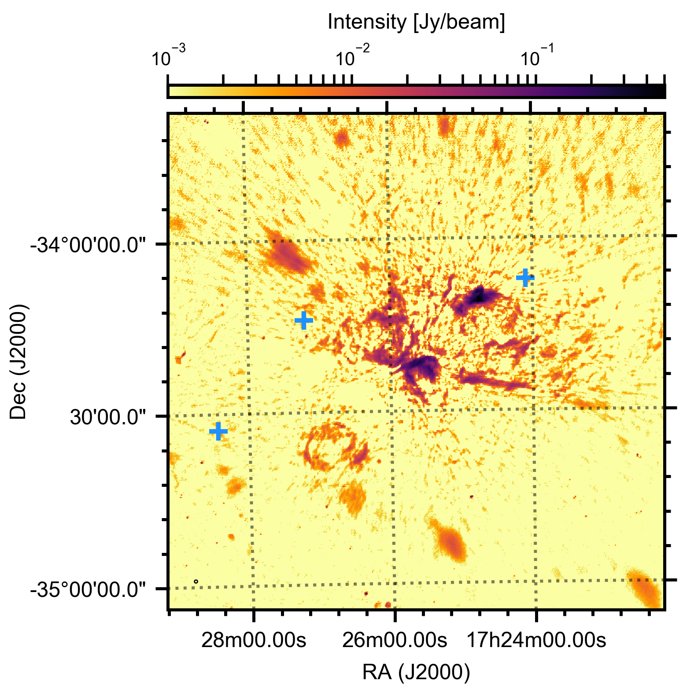
يعرض العمود الأيسر من الشكل 2 التكبيرات الداخلية نفسها المعروضة في الشكل 1، مع تضمين تعريفات الإحداثيات وأشرطة الألوان الآن؛ وبالنسبة إلى كل حقل، تعرض اللوحة اليمنى المرتبطة به نظيره في نطاق W3 تحت الأحمر من WISE. وتعرض المناطق المرسومة في اللوحة اليسرى، والمحددة استنادا إلى المورفولوجيا الراديوية لـ G1 وG3، أيضا كمناطق بيضاء متقطعة في اللوحات اليمنى. كما أن مجالات الرؤية متطابقة. ومن الواضح، في G1 وG3، كيف تتراكب المصادر الراديوية وتحت الحمراء الممتدة موضعيا وتتشابه في مورفولوجيتها الشبيهة بالصدمة القوسية، وإن بدا أن ثمة فروقا صغيرة في البنية الدقيقة موجودة. أما المصدر تحت الأحمر المحدد كصدمة G8 القوسية في E-BOSS، فلا يملك بوضوح أي نظير راديوي مرتبط به. وبالمثل، لا تُرصد راديويا أي من الصدمات القوسية الباقية البالغ عددها 5 في هذا الحقل. لذلك نستنتج أن النظيرين الراديويين لـ G1 وG3 هما على الأرجح رصدان راديويان للصدمتين القوسيتين. ومع ذلك، نؤكد أن منطقة NGC 6357 معقدة في الأشعة تحت الحمراء والراديو على السواء، وبخاصة في G1، حيث توجد بنى منتشرة عديدة أخرى في الحقل. وسنواجه مشكلات مماثلة في الحقول الأخرى أدناه.
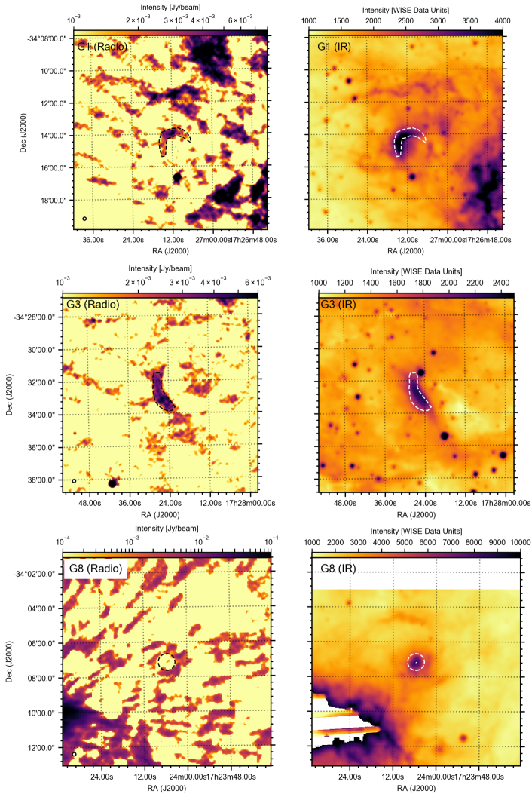
بطريقة مشابهة لحالة NGC 6357، نعرض منطقة تشكل النجوم الضخمة RCW 49 في الشكل 3. يدرج Peri et al. (2015) ثلاثة مرشحات لصدمات قوسية – S1 وS2 وS3 – في هذه المنطقة، استنادا إلى صور GLIMPSE من Spitzer التي أوردها Povich et al. (2008)، رغم أنه في بيانات WISE لا يكون غير S1 مشبعا. وفي وقت سابق، درس Benaglia et al. (2013) صورة عميقة لـ ATCA عند GHz لمنطقة RCW 49، مبرزا انبعاثا راديويا متطابقا مع مواضع الصدمات القوسية لـ S1 وS3 (بالنسبة إلى S1 لم تكن صورة 9 GHz متاحة؛ وعند موضع S3 لم يُحدد انبعاث مهم عند 9 GHz). ونعرض مرة أخرى تكبيرات داخلية للمربعات ذات الدرجة حول مواضع مرشحات الصدمات القوسية الثلاث تحت الحمراء. ونرى أننا في RACS واجهنا مشكلات مشابهة لما يواجهه Peri et al. (2015) مع WISE. يبدو أن S1، الواقع بعيدا بشكل ملحوظ عن مركز منطقة تشكل النجوم، يظهر نظيرا راديويا. أما S2 وS3 فيقعان قرب مركز منطقة تشكل النجوم، مما يجعل تقييم أصل انبعاثهما الراديوي صعبا.
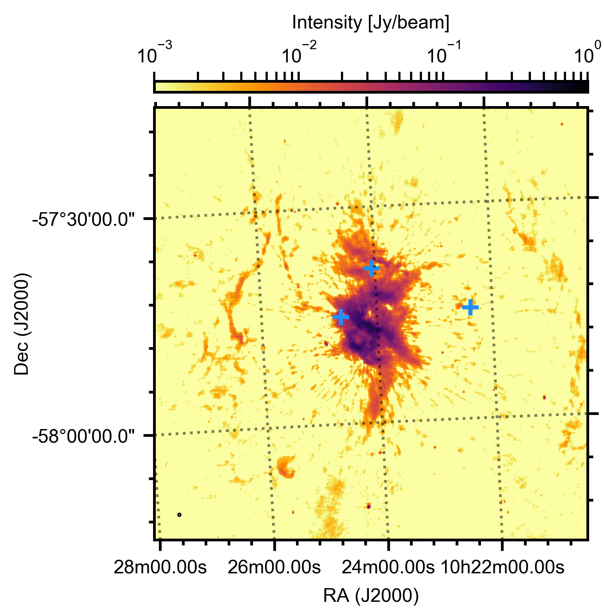
في الشكل 4، نعرض S1 في النطاقين الراديوي (يسارا) وتحت الأحمر (يمينا) في اللوحات العلوية. وتستند المنطقة المرسومة في هذه الصور إلى الصدمة القوسية تحت الحمراء، مبينة كيف يتراصف المصدر الراديوي مع البنية تحت الحمراء. لذلك نعد مصدر RACS النظير الراديوي لصدمة S1 القوسية تحت الحمراء، مع ملاحظة أن المصدر الراديوي يمتد أكثر نحو الشمال. وقد يكون هذا الامتداد الإضافي مصدرا راديويا ممتدا غير مرتبط، أو جزءا من الخلفية الضجيجية قرب منطقة RCW 49 الساطعة. وبالنسبة إلى S2 (يسارا) وS3 (يمينا)، المعروضين راديويا في اللوحات السفلية، يجعل غياب بيانات WISE غير المشبعة تقييم وجود نظير راديوي أمرا صعبا. بالنسبة إلى S3، يمكن رؤية فجوة ظاهرة إلى الغرب من موضع الصدمة القوسية تحت الحمراء لـ S3. لذلك يمكننا، على نحو تجريبي جدا، رسم منطقة قوسية الشكل عند هذا الموضع، لكن تعريفها كصدمة قوسية راديوية يبقى تخمينيا للغاية. وبالنسبة إلى S2، المشار إليه بالصليب الأبيض، يمكن رؤية انخفاض في التدفق الراديوي إلى جنوب موضع الصدمة القوسية. غير أن هذا الانخفاض أقل وضوحا مما في S3. وبجمع ذلك كله، يمكننا إذن أن نستنتج أن انبعاثا راديويا يُرى عند موضعي S2 وS3، لكنه قد يكون من الممكن تصوره غير مرتبط بالصدمة القوسية.
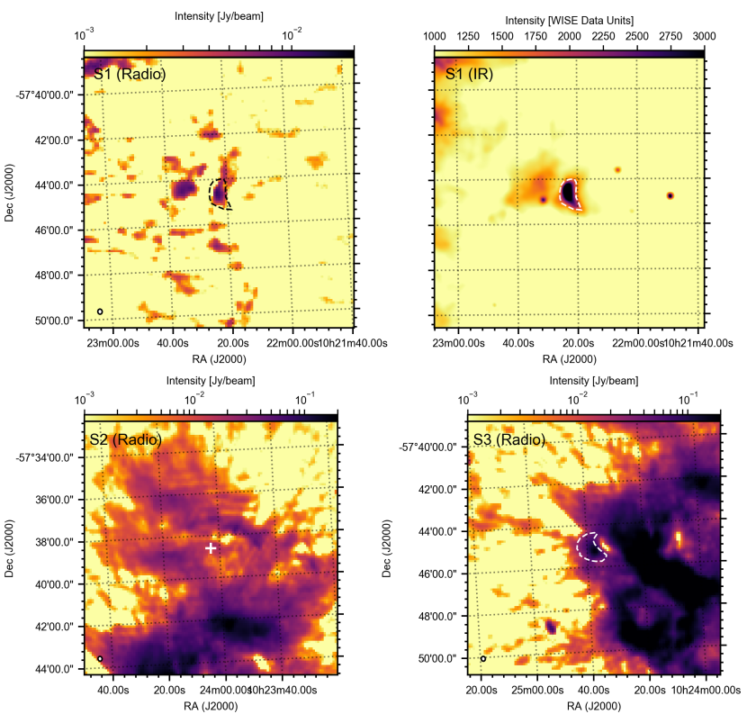
تُعرض الصدمات القوسية الأربع التالية في الأشعة تحت الحمراء، التي يظهر عند موضعها انبعاث راديوي، في الشكلين 5 و6، على النحو نفسه كما في الشكل 2. وفي جميع الحالات، تكون المناطق السوداء والبيضاء المتقطعة هي نفسها في العمودين الأيسر والأيمن؛ وفي هذين الشكلين، تستند المناطق الأربع كلها إلى مورفولوجيا الصدمة القوسية تحت الحمراء في العمود الأيمن. ويظهر أول الحقول الأربعة، المتمركز على HIP 88652 (الشكل 5، الأعلى)، مصدرا راديويا كبيرا وممتدا عند موضع الصدمة القوسية تحت الحمراء. ويبدو أن أسطع منطقة في هذا المصدر الممتد تتبع الشكل القوسي تحت الأحمر، رغم أن البنية الراديوية تمتد في اتجاهي الشمال والجنوب. كما تتأثر الصورة الراديوية بشدة بوجود مصدرين نقطيين ساطعين إلى الشمال الغربي من الصدمة القوسية، لم تكتمل إزالة التفافهما، ولذلك يتركان خطوطا شعاعية من البقايا الراديوية تتقاطع مع موضع الصدمة القوسية. لذلك، رغم أن المورفولوجيا الراديوية والتراكب الموضعي يشيران إلى أن بنية RACS قد تكون النظير الراديوي لصدمة HIP 88562 القوسية، فإن هذا الاستنتاج يحتاج إلى تأكيد؛ إما عبر أرصاد راديوية جديدة أو ربما عبر إعادة تصوير بيانات ASKAP مصممة خصيصا لهذا الحقل.
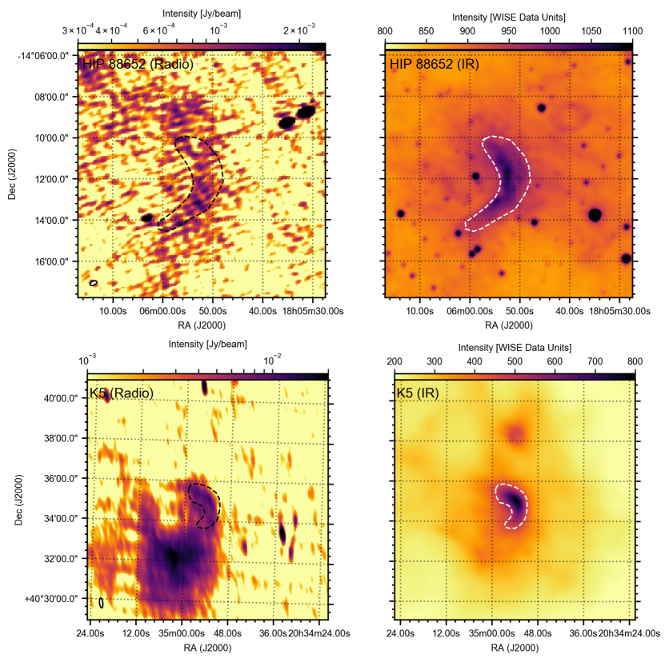
تعرض اللوحات السفلية من الشكل 5 المصدر المسمى K5 في فهرس E-BOSS الثاني، الواقع في تجمع Cygnus OB2. ويحتوي هذا التجمع على ما مجموعه 11 صدمة قوسية مدرجة في E-BOSS، بما في ذلك أول صدمة قوسية راديوية لنجم هارب BD+43o3654 (وهي بعيدة جدا شمالا بحيث لا يغطيها RACS). ومن بين الصدمات القوسية المغطاة، لا يظهر انبعاث راديوي في RACS إلا في K5. وتبين المنطقة السوداء المتقطعة، المنشأة استنادا إلى صورة WISE، كيف يتتبع الانبعاث الراديوي الصدمة القوسية على نطاق عام، مندمجا في المصدر الراديوي الممتد إلى الجنوب. وعلى الرغم من وجود هذا المصدر الممتد الجنوبي، فإن التشابه في المورفولوجيا يدفعنا إلى استنتاج أن الانبعاث الراديوي يشكل على الأرجح نظير RACS لـ K5.
الحقلان المعروضان في النطاقين الراديوي (يسارا) وتحت الأحمر (يمينا) في الشكل 6 يشبهان حالة K5: فالمناطق، المستندة إلى مورفولوجيا الصدمة القوسية تحت الحمراء، تبين كيف يتتبع الانبعاث الراديوي المورفولوجيا تحت الحمراء. غير أنه في كل من HIP 98418 (الأعلى) وHIP 38430 (الأسفل)، يوجد انبعاث راديوي ممتد آخر قرب موضع الصدمة القوسية. وفي كلتا الحالتين يقع الهدف في حقل ISM معقد، كما يتضح من الصور تحت الحمراء ويؤكده RACS. ومع ذلك، وعلى غرار K5، يقودنا التشابه في المورفولوجيا والموضع إلى استنتاج أن الانبعاث ناجم على الأرجح عن النظير الراديوي للصدمة القوسية تحت الحمراء.
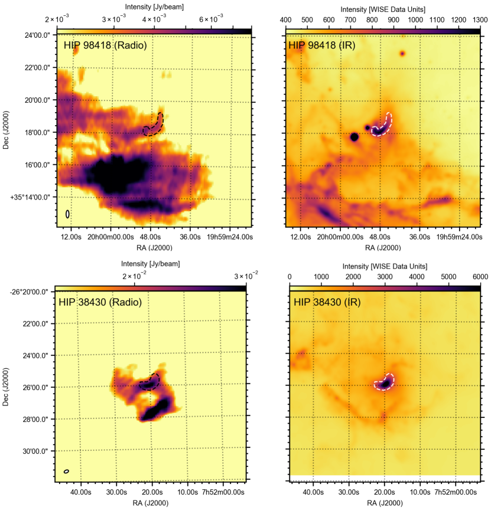
إن تعقيد الحقول الراديوية، كما يتضح في الأهداف أعلاه، يجعل من الصعب تقييم ما إذا كان الانبعاث الراديوي المرصود ينشأ في الصدمة القوسية بما لا يدع مجالا للشك. وفي الهدف العاشر والأخير من E-BOSS ذي الانبعاث الراديوي المرتبط، نواجه أبسط حقل في RACS. في الشكل 7، نعرض حقلي RACS وWISE اللذين يحتويان على HIP 24575 (أي النجم في AE Aur). وتستند المنطقة المرسومة في كلتا اللوحتين إلى شكل المصدر الراديوي، المتسق مع مصدر نقطي. ومع أنه يتراكب مع موضع الصدمة القوسية تحت الحمراء لـ HIP 24575، فإن الصورة الراديوية لا توحي بأننا ننظر إلى صدمة قوسية راديوية. فطبيعته كمصدر نقطي على وجه الخصوص، من دون أي مؤشرات إلى انبعاث ممتد حتى خافت يحيط به، ترجح وجود دخيل متصادف. وإضافة إلى ذلك، لم ترصد دراسات VLA الراديوية عند ترددات راديوية أعلى أي انبعاث راديوي عند موضع الصدمة القوسية، حتى حساسيات دون كثافة تدفق مصدر RACS (Rangelov et al., 2019). وبالاستناد إلى خصائص الريح النجمية ومسافة HIP 24575 كما يوردها Peri et al. (2015)، يمكننا استخدام الصياغة في Wright & Barlow (1975) لتقدير اللمعان الراديوي للريح النجمية. ونتوقع كثافة تدفق دون nJy من ريح النجم الضخم، ولا يمكن التوفيق بينها وبين كثافة تدفق مصدر RACS النقطي في نطاق mJy. لذلك نستنتج أن هذا المصدر الراديوي غير مرتبط على الأرجح لا بالنجم الضخم HIP 24575 ولا بصدمته القوسية.
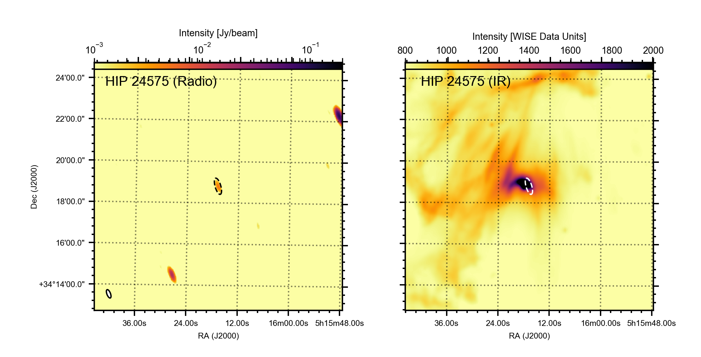
4 القياسات والحسابات
بعد تقييم وجود الانبعاث الراديوي ومورفولوجيته عند مواضع صدمات E-BOSS القوسية، يمكننا الانتقال إلى تقدير مرصوداتها الأساسية وخصائصها الفيزيائية. وسنفعل ذلك لكل من الأهداف المرصودة وغير المرصودة راديويا، لكننا نستبعد عددا من الصدمات القوسية: أولا، لا نأخذ Vela X-1 في الاعتبار، إذ لا يكشف RACS عن انبعاث راديوي عند موضعه، بينما يعرض Van den Eijnden et al. (2022) رصدا راديويا من MeerKAT بالتفصيل. ثانيا، لا تملك المصادر المشار إليها باسم SER1 إلى SER7 في Peri et al. (2015) مسافة مرتبطة في الفهرس. لذلك، وبما أن أيا من هذه المصادر غير مرصود راديويا وأن غياب المسافة يمنع وضع قيود إضافية ذات معنى فيزيائي، سنتجاهل هذه الأهداف في بقية هذا العمل. وأخيرا، لا نأخذ RCW 49 S2 وRCW 49 S3 هنا في الاعتبار، لأن فهرس E-BOSS لا يحتوي على قيود هندسية تحت حمراء لهذين الهدفين. ورغم أن كليهما يظهر انبعاثا راديويا عند موضعه (انظر أيضا Benaglia et al., 2013)، فإن العلاقة بين هذا الانبعاث والصدمة القوسية تبقى غير واضحة وتتطلب أرصاد متابعة مخصصة.
| Source | Detection | or RMS | Image RMS | Beam major | Beam minor | * | * | D* | * | RACS field |
|---|---|---|---|---|---|---|---|---|---|---|
| [Jy] | [Jy] | axis ["] | axis ["] | [/yr] | [km/s] | [pc] | [cm-3] | |||
| HIP 16518 | No | 254 | 285 | 19.9 | 17.7 | 0334-37A | ||||
| HIP 24575 | No | 680 | 245 | 19.8 | 16.8 | 0510-31A | ||||
| HIP 25923 | No | 213 | 267 | 19.8 | 15.9 | 0535-06A | ||||
| HIP 26397 | No | 250 | 282 | 18.7 | 15.4 | 0537-37A | ||||
| HIP 29276 | No | 230 | 228 | 19.9 | 16.0 | 0559-56A | ||||
| HIP 31766 | No | 270 | 304 | 24.7 | 16.3 | 0649+00A | ||||
| HIP 32067 | No | 1330 | 203 | 14.2 | 12.7 | 0649-06A | ||||
| HIP 34536 | No | 760 | 733 | 14.6 | 12.6 | 0709-12A | ||||
| HIP 38430 | Yes | 31700 | 268 | 21.6 | 15.6 | 0741-25A | ||||
| HIP 62322 | No | 180 | 213 | 20.1 | 13.4 | 1230-68A | ||||
| HIP 72510 | No | 250 | 226 | 18.3 | 13.4 | 1428-56A | ||||
| HIP 75095 | No | 250 | 281 | 18.7 | 13.2 | 1510-56A | ||||
| HIP 77391 | No | 200 | 277 | 15.6 | 13.1 | 1600-50A | ||||
| HIP 78401 | No | 330 | 272 | 17.7 | 17.3 | 1550-25A | ||||
| HIP 81377 | No | 270 | 233 | 13.9 | 12.8 | 1625-12A | ||||
| HIP 82171 | No | 170 | 224 | 18.3 | 12.7 | 1635-56A | ||||
| HIP 88652 | Yes | 2240 | 327 | 22.1 | 15.9 | 1806-12A | ||||
| HIP 92865 | No | 310 | 277 | 15.3 | 12.8 | 1849-06A | ||||
| HIP 97796 | No | 410 | 288 | 23.5 | 14.6 | 1938-18A | ||||
| HIP 47868 | No | 210 | 239 | 18.9 | 13.2 | 0952-31A | ||||
| HIP 98418 | Yes | 5300 | 263 | 18.8 | 12.9 | 1954-37A | ||||
| HIP 104579 | No | 340 | 188 | 14.8 | 14.0 | 2056-37A | ||||
| HD 57682 | No | 430 | 285 | 23.9 | 14.7 | 0709-12A | ||||
| HIP 86768 | No | 290 | 283 | 24.1 | 14.4 | 1735-06A | ||||
| RCW 49 S1 | Yes | 12600 | 229 | 15.2 | 13.1 | 1014-56A | ||||
| K4 | No | 1900 | 187 | 15.1 | 13.8 | 2025-37A | ||||
| K5 | Yes | 11150 | 187 | 15.1 | 13.8 | 2025-37A | ||||
| K7 | No | 1610 | 187 | 15.1 | 13.8 | 2025-37A | ||||
| K10 | No | 530 | 187 | 15.1 | 13.8 | 2025-37A | ||||
| G1 | Yes | 8000 | 376 | 13.6 | 12.8 | 1721-37A | ||||
| G2 | No | 1500 | 376 | 13.6 | 12.8 | 1721-37A | ||||
| G3 | Yes | 5970 | 376 | 13.6 | 12.8 | 1721-37A | ||||
| G4 | No | 780 | 376 | 13.6 | 12.8 | 1721-37A | ||||
| G5 | No | 1700 | 376 | 13.6 | 12.8 | 1721-37A | ||||
| G6 | No | 1600 | 376 | 13.6 | 12.8 | 1721-37A | ||||
| G8 | No | 4500 | 376 | 13.6 | 12.8 | 1721-37A | ||||
| 4U 1907+09 | No | 600 | 271 | 20.0 | 14.4 | 1922-12A | ||||
| J1117-6120 | No | 2640 | 250 | 18.0 | 13.0 | 1135-62A | ||||
| BD 14-5040 | No | 730 | 527 | 21.5 | 14.8 | 1831-12A | ||||
| Star 1 | No | 1900 | 527 | 21.5 | 14.8 | – | 1831-12A |
في الجدول 2، نسرد المرصودات ذات الصلة للأهداف المتبقية البالغ عددها 40. وبالنسبة إلى كل مصدر، نسرد إما كثافة التدفق المرصودة في أسطع حزمة له (للمصادر المرصودة) أو قيمة RMS المقاسة فوق منطقة دائرية بنصف قطر 2 دقيقة قوسية ومركزها موضع الصدمة القوسية (للمصادر غير المرصودة). ونسرد أيضا RMS للصورة الكاملة (العمود 4)، كما ورد في مستودع بيانات RACS، ويمكن استخدامه كتقدير RMS للمصادر المرصودة راديويا. وبدلا من ذلك، تبرز مقارنة قيم RMS هذه للصورة مع RMS عند موضع المصدر كيف أن ضجيجا معززا محليا ربما عقد رصد نظير راديوي لعدد من الأهداف غير المرصودة. وبالنسبة إلى الأهداف المرصودة، لا نأخذ إلا أسطع حزمة في الاعتبار، لأن شكل الصدمة القوسية ليس محددا بقدر نظرائها تحت الحمراء أو لأن مصادر مربكة قريبة تعقد تحديد المنطقة التي تهيمن فيها الصدمة القوسية. لذلك، وبافتراض أن أسطع حزمة هي الأكثر هيمنة بوضوح من انبعاث الصدمة القوسية، سنقصر حساباتنا في هذا القسم على ذلك الجزء من الصدمة. وأي سيناريو فيزيائي يستطيع تفسير الانبعاث المرصود ينبغي أن يكون قادرا على تفسير أشد جزء من الصدمة القوسية؛ ولذلك ستكون أسطع حزمة الأكثر تقييدا في تقييم التفسيرات الفيزيائية. ونسرد أيضا حجم المحورين الكبير والصغير للحزمة لكل صورة، إضافة إلى اسم صورة RACS لتيسير الوصول إلى البيانات.
تتيح لنا هذه المرصودات البسيطة، بالاقتران مع القياسات الهندسية تحت الحمراء، والمسافات، وخصائص الرياح النجمية، وتقديرات كثافة ISM المدرجة في فهارس E-BOSS (والمجدولة جزئيا في الملحق أيضا)، استكشاف سيناريوهين للانبعاث الراديوي. وكما قُدم على نحو موسع في Van den Eijnden et al. (2022) لدراسة الانبعاث الراديوي من صدمة Vela X-1 القوسية، يمكننا النظر في عمليات انبعاث غير حراري/سنكروتروني أو حراري/حر-حر – وكذلك، بطبيعة الحال، مزيجها. ونلخص نتيجة هذه الاعتبارات في الجدول 3. ويمكن إعادة إنتاج الحسابات المناقشة أدناه باستخدام دفتر Jupyter المرافق لهذا العمل (انظر توافر البيانات).
| Source / | Synchrotron | Synchrotron | Free-free | Free-free | Conclusion |
|---|---|---|---|---|---|
| field | origin | constraints | origin | constraints | |
| G1 / NGC 6357 | No | % for all | Yes | between – for realistic | Thermal |
| G3 / NGC 6357 | Unlikely | % for all | Yes* | between – for realistic | Thermal |
| S1 / RCW 49 | Unlikely | % for all | Yes | between – for realistic | Thermal |
| HIP 88652 | Yes | % for G | No | Non-thermal | |
| K5 / Cyg OB2 | No | % for all | No | Neither | |
| HIP 98418 | Yes | % for G | Maybe | Requires high or an overestimated | Non-thermal |
| HIP 38430 | Yes | % for G | Yes | between – for realistic | Either/combined |
4.1 الانبعاث غير الحراري/السنكروتروني
نقيم هنا أولا أصلا سنكروترونيا. في هذا السيناريو، الذي طوّره خلال العقد الماضي مؤلفون كثيرون (مثلا Benaglia et al., 2010, 2021; Del Valle & Romero, 2012; Del Valle & Pohl, 2018; De Becker et al., 2017; Del Palacio et al., 2018)، يغذي جزء من القدرة الحركية للريح النجمية تسارع الإلكترونات عند الصدمة إلى توزيع كثافة عددية بقانون قوة، غالبا عبر التسارع الانتشاري بالصدمات. ثم تدور هذه الإلكترونات حول المجال المغناطيسي، الناشئ في الريح النجمية وربما المضخم في الصدمة، فتفقد الطاقة عبر الإشعاع السنكروتروني. والأهم أن عدة معاملات أساسية لا يمكن تحديدها مباشرة من بيانات RACS بل لا يمكن إلا تقديرها: شدة المجال المغناطيسي في الصدمة، والطاقة العظمى للإلكترونات ، وميل توزيع الكثافة العددية للإلكترونات النسبية (المرتبط بالدليل الطيفي الراديوي عبر ، حيث ). وبالمثل، فإن كفاءة حقن الطاقة في جمهرة الإلكترونات النسبية من القدرة الحركية للريح النجمية – وهي مصدر الطاقة الأساسي للإلكترونات في هذا السيناريو – غير معروفة ولا قابلة للقياس على نحو وحيد. ومع ذلك، يمكننا، عند افتراض قيم معقولة لهذه المعاملات، أن ننظر فيما إذا كان بالإمكان بناء سيناريو واقعي ومتسق ذاتيا يتوافق مع الخصائص الراديوية المرصودة.
سنولي هنا اهتماما خاصا لكفاءة الحقن المذكورة أعلاه : وهي كسر القدرة الحركية الكلية المتاحة للريح النجمية التي تمر عبر منطقة الصدمة القوسية المدروسة واللازمة للحفاظ على جمهرة الإلكترونات في حالة مستقرة. ولقيم مفترضة لـ و، وبافتراض أن فقدان طاقة الإلكترونات تقوده الفواقد الانتشارية لا الإشعاعية11 1 وبذلك يعطي ذلك، شكليا، حدا أدنى لـ : إذ إن آليات الفقد الإضافية تزيد بطبيعتها الطاقة المطلوبة، ومن ثم الكفاءة، للحفاظ على الحالة المستقرة.، يمكن اشتقاق العلاقة الآتية بين و (Van den Eijnden et al. 2022، لكن انظر أيضا مثلا Del Palacio et al. 2018 وBenaglia et al. 2021 لحسابات مكافئة):
| (1) |
في المعادلة أعلاه، تمثل مسافة الوقوف (أي المسافة بين قمة الصدمة القوسية والنجم)؛ وتمثل المسافة إلى المصدر؛ وتمثل كثافة تدفق منطقة الصدمة القوسية المدروسة (أي المكاملة على البنية كلها أو على جزء فرعي، مثل أسطع حزمة)؛ وتمثل معدل فقدان الكتلة في الريح النجمية؛ وتمثل سرعة الريح النهائية؛ وتمثل عرض الصدمة القوسية (المفترض أنه يساوي عمقها في اشتقاق هذه المعادلة)؛ وتمثل حجم منطقة الصدمة القوسية المدروسة؛ وتمثل المجال المغناطيسي؛ وتمثل دالة عددية، معرفة في المعادلة 8.129 من Longair (2011)؛ وتمثل تردد الرصد؛ وتمثل طاقة الإلكترون الدنيا، المفترضة هنا أنها كتلة سكون الإلكترون؛ وأخيرا تمثل و و و سماحية الفراغ وسرعة الضوء وكتلة الإلكترون والشحنة الواحدة، على الترتيب.
تُحد كفاءة الحقن بدلالة المجال المغناطيسي بسهولة بشرطين بسيطين. أولا، لا يمكن للكفاءة بحكم التعريف أن تتجاوز الواحد. ثانيا، لا يمكن للمجال المغناطيسي أن يتجاوز قيمة عظمى ، يفرضها شرط أن تكون الريح النجمية قابلة للانضغاط لكي تكون الصدمة القوسية قد تشكلت (Del Palacio et al., 2018; Benaglia et al., 2021):
| (2) |
حيث تمثل المعامل الأديباتيكي لغاز مثالي، وتمثل كثافة الريح النجمية عند . لذلك تبدي اعتمادا متناقصا رتيبا22 2 نظرا إلى أن و لجمهرة إلكترونية واقعية مسرعة عند صدمة. على المجال المغناطيسي بين وقيمتها الدنيا عند – أو، بدلا من ذلك، تتجاوز الواحد ويصبح السيناريو السنكروتروني غير ممكن كآلية الانبعاث الوحيدة. والأهم أن قيدا إضافيا وأشد على ينتج من أرصاد التسارع الانتشاري بالصدمات في سياقات مختلفة. وكما نوقش بالتفصيل في Van den Eijnden et al. (2022)، فإن أرصاد الصدمة القوسية الراديوية BD+43o3654 (Del Palacio et al., 2018; Benaglia et al., 2021)، وسدم رياح النجوم النابضة (Stappers et al., 2003)، والثنائيات ذات الرياح المتصادمة (Del Palacio et al., 2022) تشير إلى قيم نموذجية دون %. وسنستخدم، في بقية هذه الورقة، هذه القيمة لـ كقيمة عظمى أكثر واقعية.
في اللوحة العلوية من الشكل 8، نرسم كفاءة الحقن للصدمات القوسية المدروسة والمرصودة راديويا. وبالنسبة إلى العلاقات المرسومة، افترضنا طاقة إلكترون عظمى eV و (أي ). ويمكن ملاحظة فورية أن الكفاءة في K5 وG1 لا تبلغ أبدا، أو بالكاد تبلغ على الترتيب، قيما دون ، لأي شدة مجال مغناطيسي تبقي الريح قابلة للانضغاط. ومن ناحية أخرى، تبلغ HIP 88652 وHIP 38438 وHIP 98418 كفاءات مطلوبة دون % و% و%، على الترتيب، عند شدات مجالاتها المغناطيسية العظمى. وبما أن شدة المجال المغناطيسي في الريح النجمية تتناسب عكسيا مع المسافة إلى النجم، يتطلب توقع أن تكون معظم الصدمات القوسية قريبة من مجالها المغناطيسي الأقصى ضبطا دقيقا كبيرا لمعدل فقدان الكتلة في الريح وسرعتها وكثافة ISM. ومع ذلك، فإن مجالا واسعا من شدات المجال المغناطيسي في HIP 38438 وHIP 98418 يؤدي إلى كفاءات واقعية في نطاق دون %.
ويبقى مصدران بين هذين الحدين، يتطلبان كفاءات بين -% لتفسير الانبعاث الراديوي المرصود: G3 وRCW 49 S1. وبالنسبة إليهما نجد نتائج مشابهة لما أورده Van den Eijnden et al. (2022) للصدمة القوسية الراديوية Vela X-1: إذ يلزم حقن بكفاءات عالية على نحو غير متوقع (أي %) لنسبة كل الانبعاث الراديوي إلى أصل غير حراري. لكن ينبغي أن نضيف ثلاث ملاحظات دقيقة إلى هذا القول: أولا، قد يسهم الانبعاث غير الحراري بجزء فقط من الانبعاث؛ ثانيا، ينبغي أن ننظر بعناية فيما إذا كانت هذه الحزمة الراديوية الأسطع تمثل فعلا الانبعاث من الصدمة القوسية وتسيطر عليه؛ وأخيرا، قد تعتمد مثل هذه العبارات الكمية على افتراضاتنا بشأن جمهرة الإلكترونات. ونقيم الخيار الأخير صراحة في اللوحة السفلى من الشكل 8، حيث نرسم علاقة كفاءة الحقن لـ HIP 38430 بافتراض أربع توليفات مختلفة من و. ومن الواضح أن القيم العددية الدقيقة تعتمد على هذه الافتراضات، لكن و، كما افترضنا في اللوحة العلوية، يقتضيان أدنى الكفاءات المطلوبة. وبعبارة أخرى، إذا كانت تلك الافتراضات غير دقيقة، فإنها تفاقم تعقيدات G3 وRCW 49 S1 في النموذج غير الحراري.
4.2 الانبعاث الحراري/حر-حر
إضافة إلى السيناريو غير الحراري، يمكننا بدلا من ذلك النظر في أصل حراري/حر-حر للانبعاث. وفي مثل هذا السيناريو، يمكننا النظر في انبعاث حر-حر رقيق بصريا، إذ إن كثافات الصدمات القوسية وعروضها النموذجية غير كافية لجعل الصدمة سميكة بصريا عند الترددات الراديوية (Van den Eijnden et al., 2022). عندئذ يحدد كل من درجة حرارة الإلكترونات وكثافتها في الصدمة إصدار حر-حر، ومن ثم التدفق الراديوي المرصود. وكما نوقش بالتفصيل في Van den Eijnden et al. (2022)، يمكننا اشتقاق مقياس بسيط بين درجة حرارة الإلكترونات وكثافتها لتدفق راديوي مرصود معين؛ وبديلا عن ذلك، بالنسبة إلى المصادر غير المرصودة، يمكننا بدلا من ذلك رسم حدود عليا لكثافة الإلكترونات بدلالة درجة الحرارة.
إذا رُصد أيضا انبعاث خطي من الإلكترونات الحرارية – على سبيل المثال H – فيمكن كسر الانحلال بين و وإيجاد حل وحيد. غير أنه في غياب تقارير أدبية عن مثل هذا الانبعاث لمعظم الصدمات القوسية (لكن انظر القسم 5.2)، يمكننا بدلا من ذلك إيجاد قيود أخرى. فعلى سبيل المثال، نتوقع أن تتناسب درجة حرارة ما بعد الصدمة مع سرعة الصدمة، المساوية للسرعة الخاصة النجمية ، وفق ، حيث للوفرة الكونية و هي كتلة البروتون (Helder et al., 2009). وبالنسبة إلى سرعات النجوم الهاربة النموذجية البالغة km/s و km/s، تعطي هذه العلاقة درجات حرارة إلكترونية قدرها K و K، على الترتيب. ويأتي قيد ثان ومتسق على درجة حرارة الإلكترونات من Brown & Bomans (2005)، الذين أوردوا درجات حرارة لمجموعة من الصدمات القوسية المرصودة في H ضمن النطاق من K إلى K. وسنستخدم النطاق الأخير مرجعا في هذا التحليل.
بالنسبة إلى جميع الصدمات القوسية المدروسة في هذا القسم، يسرد فهرس E-BOSS كثافات ISM المستنتجة استنادا إلى خصائص الرياح النجمية ومسافة الوقوف المقاسة. ونتوقع تعزيزا للكثافة في الصدمة، بعامل 4 تتنبأ به معادلات Rankine-Hugoniot (Landau & Lifshitz, 1959) وصولا إلى عامل مشاهد في محاكاة الصدمات القوسية لدى Gvaramadze et al. (2018). ومن أجل مقارنة الصدمات القوسية المختلفة، يمكننا إذن رسم علاقة كثافة الإلكترونات ودرجة الحرارة المقاسة من الصورة الراديوية، ، مقسومة على كثافة ISM المحيطة المستنتجة هندسيا، . ونتوقع أن يقع عامل فرط الكثافة هذا ، تقريبا، في النطاق بين (أي بلا فرط كثافة) و.
في اللوحة اليسرى من الشكل 9، نرسم عامل فرط كثافة الإلكترونات بدلالة درجة الحرارة للأهداف المرصودة راديويا. وتشير المنطقة الرمادية إلى نطاق فرط الكثافة المتوقع، بينما تحصر الخطوط السوداء المتقطعة نطاق درجات حرارة الصدمة النموذجي من Brown & Bomans (2005). ومن الواضح أن أربعة من المصادر السبعة المرسومة تمر عبر منطقة الشكل التي يتداخل فيها فرط الكثافة المتوقع مع درجة الحرارة: HIP 38430، وRCW 49 S1، وG1، وG3. وبعبارة أخرى، يمكن تفسير انبعاثها الراديوي القمي المرصود عبر سيناريو حراري. أما HIP 98418، المعروض بالخط الأحمر المنقط، فيقع عند عوامل فرط كثافة أدنى؛ لذلك، لكي يكون متسقا مع صدمة مفرطة الكثافة مقارنة بالـ ISM، ينبغي أن يظهر درجات حرارة أعلى مما يستنتج عادة من أرصاد الصدمات القوسية في H. وأخيرا، تظهر HIP 88652 وK5 فرط كثافات في نطاق –، متجاوزة التوقعات للصدمات المناقشة أعلاه. وبعبارة أخرى، تتجاوز كثافة تدفقهما الراديوية القمية كثيرا كثافات التدفق التي يمكن توقعها في سيناريو حراري.
وأخيرا، بالنسبة إلى S1 في RCW 49، يمكننا إدراج الانبعاث الراديوي الذي أورده Benaglia et al. (2013) في أرصاد ATCA عند GHz. يورد Benaglia et al. (2013) كثافة تدفق كلية، مكاملة على الصدمة القوسية، قدرها mJy. وفي صور RACS، نقيس سطوعا قميا قدره mJy/beam، في حين أن الصدمة القوسية كلها أكبر من حزمة ASKAP بنحو خمسة أضعاف. لذلك يمكننا تقدير تدفق كلي تقريبي لصدمة RACS القوسية بين – mJy؛ وتعني الاختلافات بين التعريف الدقيق لحجم الصدمة القوسية، وتشكيلات المقاريب والمصفوفات الراديوية، ومستوى تقلبات السطوع عبر الصدمة القوسية الراديوية في RACS، أن تقديرا أدق غير ممكن في هذه المرحلة. وكثافة تدفق RACS مكاملة من رتبة المقدار هذه متسقة مع طيف راديوي ، وهو المتوقع للانبعاث الحراري. أما السيناريو غير الحراري () فيعطي بدلا من ذلك قيما أقرب إلى mJy. ومع ذلك، نؤكد أنه، بسبب صعوبات مقارنة مصفوفات راديوية مختلفة عند ترددات مختلفة، ينبغي التعامل مع هذه التقديرات بحذر.
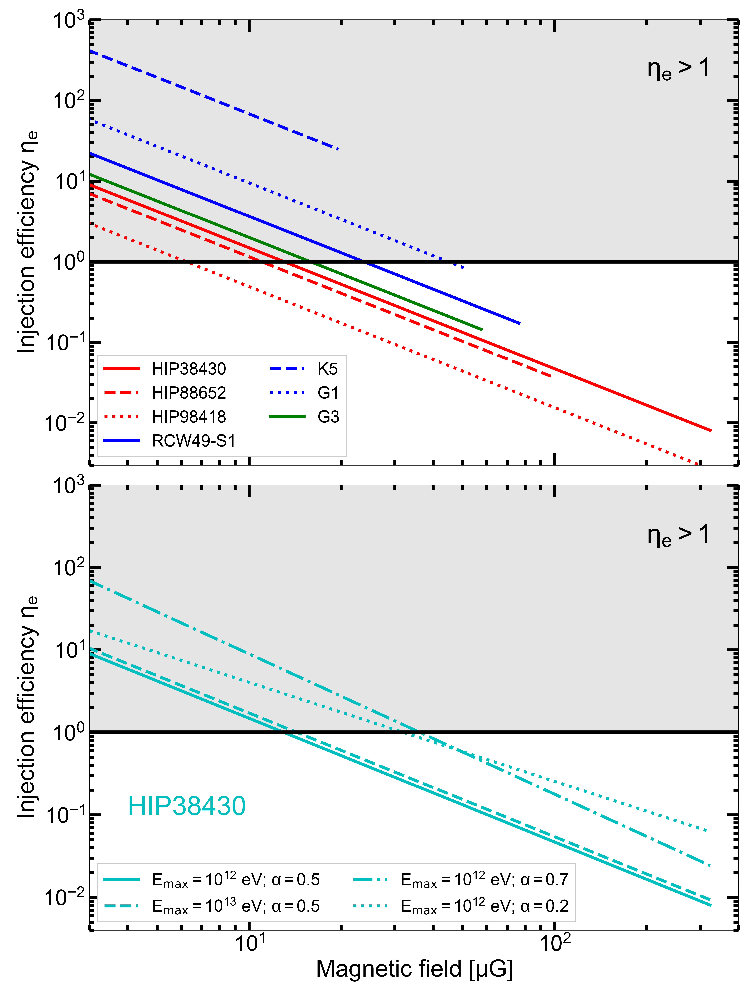
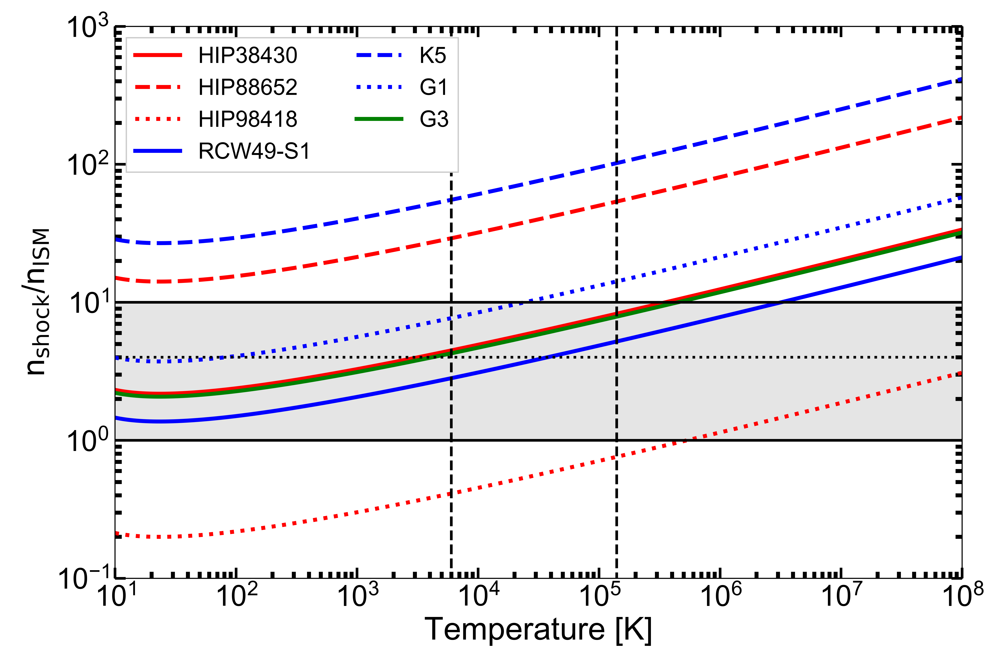
4.3 الصدمات القوسية غير المرصودة
أخيرا، بالنسبة إلى الصدمات القوسية غير المرصودة راديويا، يمكننا استخدام الأطر غير الحرارية والحرارية لتقدير كثافات التدفق الراديوية القمية المتوقعة لها في أرصاد RACS. ولهذا الغرض، في السيناريو الحراري، نفترض أن المصدر يملك إما مجالا مغناطيسيا ضعيفا نسبيا قدره G أو مجاله المغناطيسي الأقصى . وللحصول على تنبؤ متفائل، نفترض كفاءة حقن عالية قدرها %، بالاقتران مع eV و. وبالنسبة إلى السيناريو الحراري، نفترض إما K أو K وفرط كثافة قدره – وبما أن تنبؤات كثافة التدفق هذه تتناسب مع ، فيمكن ضربها في للنظر في فرط كثافة قدره .
في الشكل 10، نرسم كثافات تدفق RACS المتوقعة في أسطع حزمة للسيناريوهين غير الحراري (يسارا) والحراري (يمينا). وتشير العلامات المختلفة إلى مجالات مغناطيسية مختلفة (يسارا) أو درجات حرارة مختلفة (يمينا). وفي كلتا اللوحتين، يبين الخط الأحمر موضع تساوي كثافتي التدفق؛ ومن المتوقع أن تُرصد النقاط الواقعة فوق هذا الخط باستخدام RACS. وفي السيناريو غير الحراري، يمكن تفسير جميع حالات عدم الرصد إذا لم تكن جميع الصدمات القوسية تملك مجالها المغناطيسي الأقصى. وكما ذكرنا سابقا، سيتطلب أن يكون كل مصدر قريبا من ضبطا دقيقا استثنائيا؛ لذلك يرجح تحقق هذا الشرط. أما في السيناريو الحراري، فيبدو تفسير جميع حالات عدم الرصد أكثر تعقيدا: فبالنسبة إلى خمسة مصادر (HIP 75095، وHIP 77391، وHD 57682، وK7، وG4) من المتوقع أن يكون الانبعاث الحراري قابلا للرصد لكلتا درجتي الحرارة المدروستين. وقد تنقل زيادة كثافة أدنى أو كثافة ISM مبالغ في تقديرها هذه المصادر إلى ما دون مستوى الحساسية – ولا يتجاوز أي من المصادر ثلاثة أضعاف RMS المحلي عند كثافة إلكترونات مساوية لكثافة ISM في E-BOSS. ومع ذلك، سنعود صراحة إلى هذه المصادر الخمسة في المناقشة.
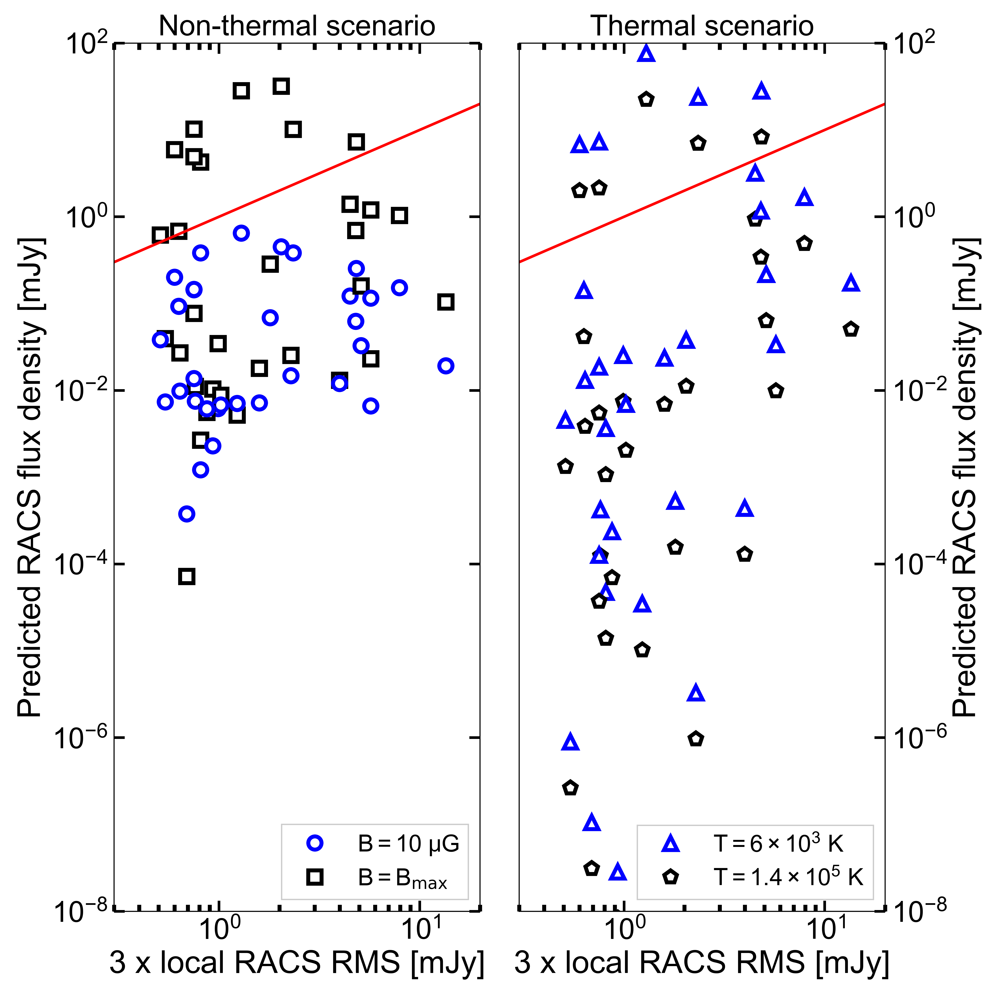
5 المناقشة
5.1 الرصد الراديوي وأصله
في هذا العمل، نبلغ عن رصد RACS لثلاثة نظراء راديوية مؤكدة وثلاثة نظراء راديوية محتملة لصدمات قوسية نجمية هاربة مرصودة بالأشعة تحت الحمراء، إضافة إلى ثلاثة مرشحين غير حاسمين/بحاجة إلى تأكيد، من عينة تضم 50 مصدرا (مثلا الجدول 1 والقسم 3). ثم أجرينا حسابات تحليلية بسيطة لتقييم ما إذا كان سيناريو انبعاث غير حراري أو حراري متسق ذاتيا يمكنه تفسير الانبعاث الراديوي المرصود، بغية إلقاء الضوء على أصل الانبعاث (الجدول 3 والقسم 4). وأخيرا، قيمنا بإيجاز كيف تنسجم الصدمات القوسية تحت الحمراء غير المصحوبة بانبعاث راديوي ضمن هذين الإطارين الحراري وغير الحراري.
إن الرصد الراديوي الثلاثة المؤكد للصدمات القوسية تحت الحمراء – G1 وG3 في NGC 6357، وS1 في RCW 49 – يزيد عدد الصدمات القوسية الراديوية للنجوم الهاربة من اثنتين (Benaglia et al., 2010; Van den Eijnden et al., 2022) إلى خمس. وتنسجم هذه المصادر الثلاثة كلها جيدا مع سيناريو حراري، حيث يكون أصل حر-حر مسؤولا عن الانبعاث الراديوي. وعلى النقيض، يبدو أن الانبعاث السنكروتروني غير قادر على تفسير لمعاناتها الراديوية المرصودة، إذ يتطلب كفاءات غير ممكنة عمليا لحقن الطاقة في جمهوراتها من الإلكترونات النسبية. وتقع المصادر الثلاثة كلها في بيئات معقدة تضم مناطق واسعة من الانبعاث الراديوي المنتشر، وربما تغيرات محلية كبيرة في كثافات ISM. لذلك قد يستنتج المرء أن ISM معقدا حول النجم الضخم الهارب قد يؤدي بالفعل دورا مهما في تهيئة الظروف التي يصبح فيها الانبعاث الراديوي الحراري قابلا للرصد. وينسجم هذا الاستنتاج أيضا مع الأصل الحراري للصدمة القوسية الراديوية لـ Vela X-1 المقترح في Van den Eijnden et al. (2022)، إذ ربما عبر هذا النظام حديثا فرط كثافة محليا في ISM (Gvaramadze et al., 2018). غير أنه ينبغي توخي الحذر: ففي حقل NGC 6357، لا يُرصد إلا اثنتان من الصدمات القوسية السبع المرئية لـ ASKAP؛ وفي Cyg OB2، تبلغ هذه النسبة واحدة من ست. لذلك قد تكون بيئات ISM المعقدة مفيدة، بل ربما ضرورية، للانبعاث الراديوي الحراري من الصدمات القوسية، لكنها بوضوح غير كافية؛ ولا سيما إذا كانت هذه البيئات المعقدة عالية البنية وتواجه حتى النجوم الهاربة القريبة من بعضها بنى مختلفة.
يمكن أن يعيق دور بيئة ISM المعقدة أيضا رصد الصدمات القوسية الراديوية أو يعقده. ففي K5، وهو أول الصدمات القوسية الثلاث المحتملة، لا يستطيع سيناريو حراري ولا غير حراري تفسير اللمعان الراديوي المرصود. وربما يُرصد انبعاث الصدمة القوسية متراكبا مع انبعاث من البنية المنتشرة واسعة النطاق إلى جنوبه (الشكل 5، أسفل اليسار). وبما أن هذه البنية المنتشرة تظهر كثافات تدفق مشابهة لمنطقة الصدمة، فقد تفسر سبب رصد لمعان صدمة غير متسق مع طاقات الريح النجمية والكثافة في ISM. وتظهر حالات أشد تطرفا لهذه المشكلة في S2 وS3 في RCW 49 – وهما اثنان من النظراء غير الحاسمة الثلاثة المذكورة آنفا. ورغم أن كليهما يظهر انبعاثا راديويا مرتبطا، فإن موقعهما داخل بنية راديوية منتشرة واسعة النطاق يمنع تعريفا واضحا لمورفولوجيا شبيهة بالصدمة القوسية. وقد تستمر هذه المشكلة حتى عند دقة أو حساسية أعلى، وإن خرائط الدليل الطيفي قد تساعد على فصل انبعاث الصدمة القوسية عن البنى المنتشرة الأخرى – لا سيما إذا كان أي انبعاث من الصدمة القوسية غير حراري، ولو جزئيا.
ويبقى ثلاثة مصادر للمناقشة: HIP 98418، وHIP 38430، وHIP 88652. المصدران الأولان رصدان محتملان، كما جادلنا في القسم 3. وإذا كان HIP 98418 حقيقيا، فأفضل تفسير له أنه مصدر غير حراري بمجال مغناطيسي أعلى من G لضمان كفاءة حقن معقولة (أي دون %)؛ وقد يتضمن إسهاما حراريا، لكنه سيتطلب درجة حرارة إلكترونية عالية لتفسير كل الانبعاث بأصل حر-حر. أما HIP 38430، إذا تأكد، فيمكن للسيناريوهين كليهما تفسير الانبعاث، منفردين أو مجتمعين. ومرة أخرى، لضمان كفاءات حقن واقعية، ينبغي أن يكون المجال المغناطيسي مرتفعا نسبيا عند G. وتنخفض هذه القيمة الدنيا بطبيعة الحال إذا قدمت العمليات الحرارية جزءا مهما من اللمعان الراديوي. وكما سنعود في مناقشة المصادر غير المرصودة، تؤكد هذه النتائج أن المجالات المغناطيسية العالية (أي جزء مهم من القيمة العظمى) أساسية لضمان الرصد الراديوي غير الحراري عند الحساسيات الحالية.
في حالة HIP 38430، من المثير أيضا ملاحظة أن هذا المصدر يحتوي على نظام نجمي عالي التعددية، يرجح أنه يتألف من ثنائيين نجميين على الأقل (Lorenzo et al., 2017). وقد تؤثر هذه الطبيعة غير العادية في عدة افتراضات تقوم عليها حساباتنا ومورفولوجيا الصدمة القوسية عموما (Wilkin, 1996): فقد لا يكون الجريان الريحي التراكمي كرويا، وقد تكون القدرة الحركية للريح ذات الصلة مقدرة تقديرا غير صحيح بسبب وجود عدة نجوم ضخمة، وقد تتأثر شدة المجال المغناطيسي باندماجات في النظام. لذلك ينبغي التعامل بحذر مع الكميات المشتقة الدقيقة لهذا الهدف، مثل المجال المغناطيسي أو كفاءة الحقن. ونلاحظ أنه لم يرد أن أيا من المصادر الأخرى المرصودة (أو المحتمل رصدها) في هذه الورقة يستضيف أنظمة ثنائية أو أعلى تعددية.
إضافة إلى ذلك، تفتح تعددية HIP 38430 احتمال أن ينشأ جزء من الانبعاث الراديوي من رياح نجمية متصادمة، على غرار الثنائيات ذات الرياح المتصادمة (CWBs). يقع موضع HIP 38430 قرب حافة منطقة الصدمة القوسية المرسومة في الشكل 6. وبالنسبة إلى مسافة E-BOSS إلى HIP 38430، يكون لمعان النظير الراديوي متسقا مع CWBs أخرى (De Becker & Raucq, 2013). كذلك، وُجد حديثا أن أحد الثنائيات المكونة لـ HIP38430 ثنائي واسع ومنفصل يتألف من نجمين من النوع O بكتلتين مرجحتين قدرهما لكل منهما (Lorenzo et al., 2017). لذلك من الممكن أن تسهم الرياح المتصادمة في النظير الراديوي المرصود. وقد يكون لتعددية النظام أثر ثان: فمسافة E-BOSS البالغة فرسخا فلكيا، المقدرة من اختلافات منظر Hipparcos، أدنى من تقديرات أخرى في الأدبيات. فعلى سبيل المثال، يجادل Lorenzo et al. (2017) بمسافة أقرب إلى kpc، مما سيجعل كلا من السيناريو غير الحراري والحراري للصدمة القوسية أقل معقولية بزيادة (بتدرج ) و (بتدرج ). وبدلا من ذلك، عند مثل هذه المسافات الأكبر، يكون اللمعان الراديوي لـ HIP 38430 مشابها للمعان القمي للثنائي ذي الرياح المتصادمة الأكثر سطوعا راديويا Apep عند أطوال موجية مشابهة (Callingham et al., 2019). ويمكن اختبار هذا السيناريو مباشرة عبر متابعة راديوية رصدية لـ HIP 38430: إذ إن اللمعان الراديوي لـ CWBs متغير بشدة على طول مداراتها الثنائية اللامركزية بسبب تغير المسافة بين النجوم الضخمة.
وأخيرا، بالنسبة إلى HIP 88652، يمكن للسيناريو غير الحراري تفسير الانبعاث عند مجال مغناطيسي G. غير أن تحديد الصدمة القوسية لهذا المصدر أقل ثقة من تحديد المصدرين المذكورين آنفا. ومن صورة RACS، نرى كيف تؤثر مصنوعات التصوير الناتجة عن مصدرين ساطعين قريبين شبيهين بالنقاط بقوة في المنطقة التي يتوقع أن تقع فيها الصدمة القوسية. لذلك يمكن التساؤل عما إذا كانت أسطع حزمة تمثل المنطقة كلها هنا. ففي حين أن كثافة التدفق القمية هي mJy/beam، فإن القيمة الوسطية هي mJy/beam على المنطقة المرسومة في الشكل 5 (الأعلى؛ ونذكر القارئ بأن هذه المناطق معدة أساسا لتوجيه النظر). وبما أن مصنوعات التصوير تزيد كثافة التدفق الوسطية في المنطقة، فقد نتوقع أن يكون أي انبعاث للصدمة القوسية أقل من mJy/beam. وفي ذلك السيناريو، يمكن أن تكون كفاءات الحقن في السيناريو غير الحراري دون % ممكنة عند مجالات مغناطيسية أدنى. لذلك، ولتقييم هذا الأثر، يلزم رصد مخصص لهذا الحقل باستخدام ASKAP أو MeerKAT، أو بدلا من ذلك إعادة تصوير البيانات القائمة لإزالة مصنوعات التصوير، لتأكيد وجود هذه الصدمة القوسية الراديوية وتقييم طبيعتها.
باستخدام صور NVSS عند GHz، بحث Peri et al. (2012) وPeri et al. (2015) أيضا عن انبعاث راديوي مرتبط بالصدمات القوسية في فهرسي E-BOSS. وقد أُبلغ عن انبعاث راديوي عند مواضع G2 وG3 وSER 5 وS1 وS3 وHIP 88652 وHIP 38430 (إضافة إلى HIP 11891، الذي لم يغطه RACS). غير أن هذه المصادر الراديوية لم تكن دائما تتراكب كليا مع شكل الصدمة القوسية وموضعها، ولم يكن بإمكان المؤلفين الجزم بما إذا كان الانبعاث الراديوي مرتبطا بالصدمة القوسية. ومن بين هذه المرشحات الراديوية، نؤكد وجود انبعاث راديوي عند مواضع G3 وS1 وHIP 88652 وHIP 38430. وفي جميع الحالات، تكون كثافات تدفق NVSS المبلغ عنها أعلى بكثير (5 إلى 8 مرات) من كثافات تدفق RACS القمية. ونظرا إلى الفرق الصغير في تردد الرصد، فمن غير المرجح أن تهيمن الهيئة الطيفية على مثل هذه الفروق، بل يرجح أنها ناجمة عن الدقة المكانية الأدنى لـ NVSS، واختلاف تشكيل المصفوفة، وربما إزاحات موضعية؛ إذ يرجح أن تغطي حزمة NVSS الصدمة القوسية كلها أو جزءا مهما منها، ومن ثم ترصد كثافة تدفقها الراديوية المكاملة. وإضافة إلى ذلك، وبالنظر إلى تعقيد المحيط المباشر لـ G2 وS3 وHIP 88652 وHIP 38430، ربما التقطت صور NVSS لهذه الصدمات أيضا إسهامات (مهمة) من مناطق الانبعاث الراديوي المنتشر المحيطة. وتبرز هذه المقارنة أهمية الدقة المكانية المحسنة لـ RACS لتحديد مورفولوجيا صدمة قوسية راديوية محتملة وفصلها عن البنى الراديوية الأخرى؛ غير أن عدم رصد RACS لـ G2، الذي أظهر انبعاثا راديويا خافتا محتملا عند دقة أدنى في NVSS (عند mJy/beam؛ Peri et al., 2015)، يذكّر أيضا بأن مثل هذه الدقة المحسنة لا تكون مفيدة إلا إذا صاحبتها حساسية كافية تمنع تفريق الانبعاث إلى ما دون حد الرصد.
5.2 انبعاث H في السيناريو الحراري؟
بالنسبة إلى الأهداف الأربعة التي يستطيع فيها الانبعاث الحراري تفسير الصدمات القوسية الراديوية (المحتملة) المرصودة على نحو واقعي (G1 وG3 وS1 وHIP 38430)، يمكننا النظر فيما إذا كان من المتوقع صدور انبعاث خط H من جمهرة الإلكترونات الحرارية نفسها. ويمكننا تطبيق الصياغة التي قدمها Gvaramadze et al. (2018) وطبقها Van den Eijnden et al. (2022) لتقدير السطوع السطحي لـ H من أجل درجة حرارة وكثافة إلكترونات وعمق صدمة قوسية معين. وباتباع افتراضنا أن عرض الصدمة القوسية وعمقها متشابهان، وباستخدام عامل فرط الكثافة النظري البالغ أربعة، نجد أن الأهداف الأربعة كلها ستظهر سطوعا سطحيا بين و Rayleigh33 3 1 Rayleigh erg s-1 cm-2 arcsec-2. ( K) أو و Rayleigh ( K). وللمقارنة، فإن صدمة Vela X-1 القوسية رصدها Gvaramadze et al. (2018) بسطوع سطحي قدره Rayleigh في SuperCOSMOS H Survey (Parker et al., 2005)44 4 http://www-wfau.roe.ac.uk/sss/halpha/index.html. لذلك يتبادر تلقائيا التساؤل عما إذا كانت هذه الصدمات القوسية الأربع تظهر في صور SuperCOSMOS أيضا.
في الشكل 11، نعرض صور SuperCOSMOS H لـ G1 وG3، مع تراكب الكنتورات نفسها كما في صورهما الراديوية وتحت الحمراء (الشكل 2). وفي حالة G3 (يمين)، يمكن رؤية بنية H منتشرة واضحة تتتبع موضع الصدمة القوسية تحت الحمراء والراديوية (وتمتد قليلا إلى أبعد منه). ويمثل رصد H هذا دليلا داعما قويا لأصل حراري للانبعاث الراديوي. أما في G1 (يسار)، فتُرصد منطقة منتشرة ذات امتداد أكبر كثيرا من الصدمة القوسية. غير أن مؤشرات إلى تجويف قد تكون موجودة إلى جنوب/جنوب غرب منطقة الصدمة القوسية المشار إليها، باتجاه موضع النجم. وفي HIP 38430 تظهر مشكلات مشابهة: إذ تهيمن على الصورة البنية المنتشرة واسعة النطاق التي تُرى أيضا في الراديو (بل وبضعف في الأشعة تحت الحمراء؛ الشكل 6). غير أننا لا نستطيع تقييم ما إذا كان هناك أي انبعاث مرتبط بالصدمة القوسية الراديوية المحتملة، لأنها مشبعة كليا. وتبرز هاتان الحالتان المشكلة في البحث عن الصدمات القوسية في H التي ناقشها سابقا Brown & Bomans (2005) وMeyer et al. (2016)، أي وجود مناطق HII أوسع نطاقا يمكن أن تحيط بالنجم الهارب. وأخيرا، لا يظهر S1 بنية H منتشرة واضحة على شكل صدمة قوسية؛ غير أن الحقل معقد، وفيه مصادر نقطية كثيرة وبنى منتشرة أخرى، وربما يعقد ذلك رصده.
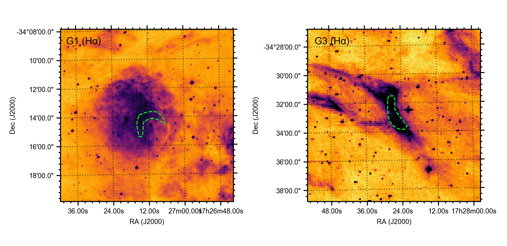
5.3 توقعات مستقبلية: قابلية الرصد الحراري مقابل غير الحراري
في هذا العمل، يبدو أن غالبية الصدمات القوسية الراديوية والمرشحة راديويا تنسجم على نحو أفضل مع سيناريو حراري لا غير حراري. وقد دُرس السيناريو الأخير على نطاق واسع في الأدبيات بسبب قدرته المحتملة على إنتاج مصادر غير حرارية لانبعاث عالي الطاقة جدا عبر تشتت كومبتون العكسي لفوتونات الأشعة تحت الحمراء أو الفوتونات النجمية (Del Valle & Romero, 2012; Schulz et al., 2014; Toalá et al., 2016; Toalá et al., 2017; De Becker et al., 2017). وقد حفز هذا الاحتمال البحث عن انبعاث راديوي بوصفه بصمات لمثل هذه الجمهورات الإلكترونية غير الحرارية (مثلا Peri et al., 2015; Benaglia et al., 2021)، لكن النتائج في هذا العمل تطرح سؤالا عما إذا كان النطاق الراديوي هو أفضل مكان للبحث: هل يعقد الانبعاث الحراري/حر-حر هذا النهج؟
لتقييم هذا السؤال، نعود مرة أخرى إلى المصادر غير المرصودة راديويا من فهارس E-BOSS. وبالنسبة إلى تلك التي تعرف فيها كثافة ISM وخصائصها الهندسية، يمكننا تقدير انبعاثها الحر-حر والسنكروتروني ومقارنتهما. وستتضمن مثل هذه المقارنة دائما عددا كبيرا من الافتراضات، مثلا بشأن عامل فرط الكثافة ودرجة حرارة الإلكترونات (للانبعاث حر-حر) أو كفاءة الحقن والدليل الطيفي والمجال المغناطيسي (للانبعاث السنكروتروني). لذلك لا يمكننا إجراء مقارنة وحيدة، بل ننظر بدلا من ذلك في سيناريوهين متطرفين. في الحالة الملائمة لانبعاث حر-حر، نفترض كثافة تساوي أربعة أضعاف كثافة ISM ودرجة حرارة منخفضة ( K)، مقترنة بمجال مغناطيسي منخفض قدره G وكفاءة حقن قدرها %. وبديلا عن ذلك، في الحالة الملائمة للسنكروترون، نفترض بدلا من ذلك أن K، بينما نغير المجال المغناطيسي إلى قيمته العظمى لكل مصدر ونزيد إلى %. وتبقى جميع المعاملات الأخرى كما هي؛ وفي كلتا الحالتين، نفترض () و eV.
في الشكل 12، نرسم كثافات تدفق RACS الراديوية الحرارية وغير الحرارية المتوقعة إحداها مقابل الأخرى؛ ويبين موضع المصدر بالنسبة إلى الخط الأحمر المنقط أي العمليتين تهيمن. وفي الحالة الملائمة للسنكروترون، يكون الانبعاث السنكروتروني بالفعل المصدر الرئيسي للانبعاث، رغم أن الانبعاث حر-حر في كثير من الحالات لا يكون أخفت بكثير – وذلك رغم المعاملات المتطرفة إلى حد ما لهذا السيناريو، لا سيما فيما يتعلق بالمجال المغناطيسي. أما في الحالة الملائمة لانبعاث حر-حر، فيهيمن الانبعاث الحراري بوضوح على الانبعاث غير الحراري في غالبية المصادر. والمصادر التي ينقلب فيها ذلك تكون عادة خافتة وأقل قابلية للرصد. ولا يصل إلى كثافات تدفق فوق mJy/beam في RACS، حيث قد تصبح قابلة للرصد بمورفولوجيات يمكن التعرف إليها، إلا عدد قليل من المصادر. وهذه هي في الغالب النقاط الممتلئة، المقابلة للمصادر الخمسة في اللوحة اليمنى من الشكل 10 – أي الأهداف الخمسة غير المرصودة التي كان من المتوقع أن يكون فيها انبعاث حراري راديوي واقعي قابلا للرصد في RACS.
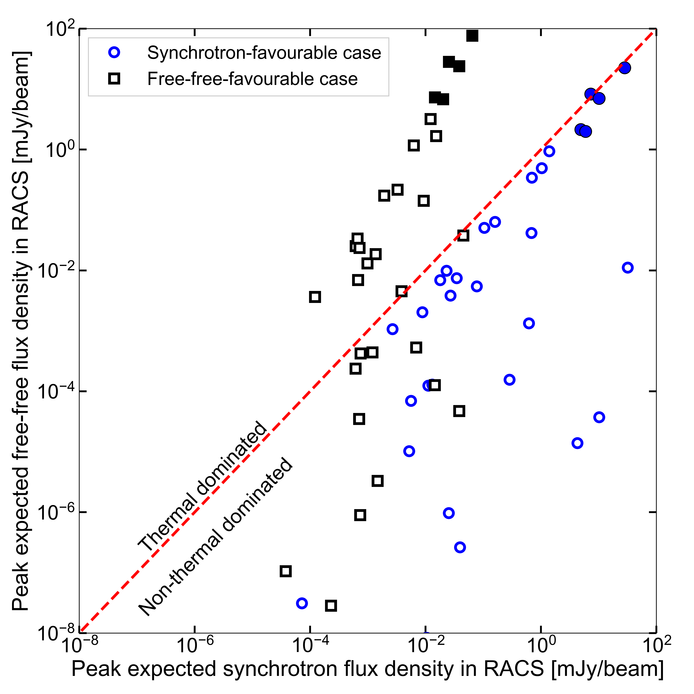
يقودنا ذلك إلى استنتاجين وملاحظة: أولا، قد يتوقع وجود انبعاث حراري/حر-حر مهيمن أو مهم في معظم الصدمات القوسية المرصودة راديويا، بالنظر إلى الخصائص النجمية وخصائص ISM لمصادر E-BOSS؛ ولا يبدو أن الخصائص غير الحرارية المتطرفة وحدها (، أو ، أو القدرة الحركية المتاحة في الريح النجمية) تؤدي إلى انبعاث سنكروتروني مهيمن. وهذا يدعو إلى تحديد خرائط موثوقة للدليل الطيفي الراديوي لهذه الصدمات القوسية بوصفها فاصلا إضافيا بين السيناريوهين، وبخاصة إذا كان الهدف هو العثور على دليل على انبعاث غير حراري. ثانيا، بالنسبة إلى المصادر الخمسة الشاذة في السيناريو الحراري، يرجح أن خصائصنا المفترضة لا تنطبق؛ فقد تكون كثافة ISM أو خصائص الريح النجمية غير صحيحة، أو قد يكون العمق أقل بكثير من عرض الصدمة القوسية. وأخيرا، نلاحظ أنه على الرغم من أننا عالجنا السيناريوهين مستقلين، فإن قابلية رصدهما ليست مستقلة: فعلى سبيل المثال، تزيد كثافة ISM الأعلى كثافة الصدمة وإصداريتها الحرارية، لكنها تقلل أيضا مسافة الوقوف وبذلك تزيد القدرة الحركية للريح النجمية المارة عبر منطقة الصدمة. وقد يؤدي ذلك، عند حساسية أعلى، إلى رصد صدمات تعرض مزيجا من نوعي الانبعاث.
5.4 توصيات مستقبلية
ننتقل بإيجاز إلى الافتراضات المعتمدة في الحساب غير الحراري ودور الأرصاد الجديدة في اختبارها. في اللوحة السفلى من الشكل 8، نعرض أثر تغيير الدليل الطيفي (أو، على نحو أدق، ) والطاقة العظمى للإلكترونات. ويبين ذلك كيف يمكن، بوجه خاص، للتغيرات في أن تؤدي إلى كفاءات حقن مطلوبة أعلى بكثير. أما الطاقة العظمى، من ناحية أخرى، فليس لها أثر كمي كبير. وعلى نحو أضمن في التحليل، نفترض أن عمليات التبريد غير الحرارية الأخرى (أي تشتت كومبتون العكسي، وإشعاع الفرملة النسبي؛ Del Valle & Romero, 2012; Del Palacio et al., 2018) لها أثر مهمل، باستثناء الانبعاث السنكروتروني. وبالمثل، نفترض أنه، رغم أن الانبعاث السنكروتروني هو عملية الانبعاث غير الحراري المهيمنة، فإنه لا يهيمن على فواقد الإلكترونات. بل نفترض أن هذه الفواقد يهيمن عليها الهروب، وهو ما يحدد الطاقة العظمى للإلكترونات وكفاءة الحقن.
تظهر معظم التحليلات في الأدبيات، الخاصة بـ BD+43o3654 (Benaglia et al., 2010, 2021) وVela X-1 (Van den Eijnden et al., 2022)، إضافة إلى دراسات أخرى ركزت على انبعاث الصدمات القوسية عالي الطاقة (مثلا Del Valle & Romero, 2012; Schulz et al., 2014; De Becker et al., 2017)، كيف تقترب مقاييس زمن الفقد السنكروتروني من مقاييس زمن الهروب الانتشاري عند أعلى طاقات الإلكترونات فقط في خصائص الصدمات القوسية النموذجية. غير أنه مع أرصاد متابعة أكثر حساسية، يمكن إجراء مثل هذه الحسابات بالتفصيل لاختبار هذه الافتراضات للمصادر في هذا العمل. وإضافة إلى ذلك، إذا أمكن قياس الأدلة الطيفية، فيمكن تقييم كفاءة الحقن ومن ثم السيناريو غير الحراري بثقة أكبر. وأخيرا، يمكن أن تساعد مثل هذه الأرصاد أيضا على فهم ما إذا كانت الصدمة القوسية قد بلغت الحالة المستقرة – وهو افتراض كامن في جميع حساباتنا (انظر Mohamed et al., 2012) – وذلك بقياس شكل الصدمة بدقة أعلى مما توفره أرصاد الأشعة تحت الحمراء، ومقارنته بنموذج الشكل في الحالة المستقرة لدى Wilkin (1996).
توجد توصيتان واضحتان أخريان للدراسات المستقبلية، وهما توسيعان لهذا العمل: توسيع عدد المصادر وتوسيع عدد معاملات ستوكس. في هذا البحث، ركزنا على فهرس E-BOSS، لأنه يسرد خصائص ISM والرياح النجمية، إضافة إلى المسافات، لمعظم الأهداف. غير أنه إذا كان المرء يجري بحثا فقط، من دون حسابات متابعة مفصلة بالضرورة، فيمكن الرجوع إلى فهارس أكبر مثل فهرس Kobulnicky et al. (2016). وبإدراج دراسات الاستقطاب، التي لم تنفذ حاليا إلا لـ BD+43o3654 (Benaglia et al., 2021)، نحصل على نهج إضافي لفهم آلية الانبعاث – يتجاوز الإصدارية والهيئة الطيفية. ويرجح أن تتطلب مثل هذه الدراسات أرصادا موجهة للوصول إلى حساسية جيدة لمستويات منخفضة من الاستقطاب، وتحليلا مستهدفا للبيانات، إذ تميل المسوح المتاحة للعامة إلى تقديم بيانات Stokes I.
نختم هذه المناقشة بالتأكيد أن الأرصاد الراديوية الموجهة الحساسة وعالية الدقة كانت أساسية، بالنسبة إلى أول صدمتين قوسيتين نجميتين هاربتين مرصودتين راديويا وأفضل دراسة، BD+43o3654 وVela X-1، لإجراء حسابات تفصيلية لطاقاتهما وآليات انبعاثهما وخصائص استقطابهما. وقد أظهر BD+43o3654 مؤشرات إلى بنية قوسية في صور NVSS، لكن أرصاد VLA المخصصة كانت مطلوبة لتأكيد وجودها (Benaglia et al., 2010). أما الصدمة القوسية الراديوية الأخفت بكثير لـ Vela X-1 فلا تظهر في RACS (RMS قدره Jy)، لكنها رُصدت مصادفة في أرصاد MeerKAT موجهة (RMS قدره Jy). ومن المرجح أن يؤدي ظهور مراصد جديدة، مثل MeerKAT وASKAP وSKA وngVLA المستقبليين، إلى رصد مزيد من الصدمات القوسية الراديوية أو المرشحين الأقوياء في بيانات المسوح، على غرار هذا العمل. ومع أرصاد متابعة مخصصة لهذه المصادر والمرشحين، نتوقع أن يكون بالإمكان جمع عينة كبيرة من الصدمات القوسية الراديوية المدروسة جيدا، لإلقاء الضوء في النهاية على كفاءات تسارع الجسيمات والانبعاث عالي الطاقة لهذه الصدمات، وكذلك خصائص انبعاثها الحراري.
6 الاستنتاجات
في هذا العمل، بحثنا عن انبعاث راديوي مرتبط بالصدمات القوسية النجمية الضخمة الهاربة في فهرس E-BOSS، باستخدام Rapid ASKAP Continuum Survey. وفي هذه الصور الراديوية، نجد نظراء لصدمات قوسية لثلاث صدمات قوسية (G1 وG3 في NGC 6357، وS1 في RCW 49)، وثلاثة مرشحين قويين (HIP 98418، وHIP 38430، وK5 في Cyg OB2)، وثلاثة مرشحين تتطلب أرصاد متابعة (S2 وS3 في RCW 49، وHIP 88652). وبالنسبة إلى الصدمات القوسية السبع التي تعرف لها خصائص هندسية وخصائص ISM كافية لإجراء حسابات انبعاث بسيطة، نجد أن أربعا منها (G1 وG3 وS1 وHIP 38430) تهيمن عليها على الأرجح انبعاثات حر-حر – رغم أن الانبعاث السنكروتروني قد يسهم أيضا إسهاما مهما في الأخيرة. وبديلا عن ذلك، يبدو أن صدمتي HIP 98418 وHIP 88652 القوسيتين يهيمن عليهما الانبعاث السنكروتروني، بينما تبقى K5 أخيرا صعبة التفسير في أي من السيناريوهين. وهناك، بدلا من ذلك، قد نرصد تلوثا مهما من بنى منتشرة أخرى، في حين تعقد مصنوعات التصوير التعريف والحسابات في HIP 88652.
تزيد هذه الأرصاد والمرشحات الراديوية زيادة كبيرة عدد النظراء الراديوية للصدمات القوسية النجمية الضخمة الهاربة، الذي لم يكن يتجاوز اثنتين قبل هذا العمل. لذلك نقيم أيضا ما إذا كان من المتوقع أن تنمو هذه العينة أكثر مع المصفوفات والمسوح المستقبلية. وبالنظر إلى كثافات التدفق المتوقعة، فمن المرجح ذلك، وإن كان من الصعب التنبؤ بما إذا كانت تلك المصادر ستهيمن عليها عمليات حرارية أو غير حرارية. وأخيرا، نوصي بدراسة النظراء والمرشحين الجدد المعروضين في هذه الورقة بمزيد من التفصيل من خلال أرصاد موجهة، لرسم بنيتها بالكامل، وقياس خرائط دليلها الطيفي الراديوي، واستقطابها. وبمثل هذه المعلومات التفصيلية، يمكن اختبار طبيعة النظراء المرشحة، ويمكن بحث طبيعة الانبعاث بمزيد من التفصيل. وفي النهاية، ستساعد مثل هذه الدراسات إذن على فهم مدى قدرة هذه الصدمات القوسية، وبأي كفاءات، على العمل كمسرعات للجسيمات ومصادر لانبعاث غير حراري عالي الطاقة جدا.
الشكر والتقدير
نشكر المحكم على تقرير بنّاء حسّن جودة هذا العمل ووضوحه. تتضمن هذه الورقة بيانات مؤرشفة حُصل عليها عبر CSIRO ASKAP Science Data Archive، CASDA (https://data.csiro.au). ويعد Australian SKA Pathfinder جزءا من Australia Telescope National Facility (grid.421683.a) التي تديرها CSIRO. وتمول الحكومة الأسترالية تشغيل ASKAP بدعم من National Collaborative Research Infrastructure Strategy. ويستخدم ASKAP موارد Pawsey Supercomputing Centre. ويعد إنشاء ASKAP وMurchison Radio-astronomy Observatory وPawsey Supercomputing Centre مبادرات من الحكومة الأسترالية، بدعم من حكومة Western Australia وScience and Industry Endowment Fund. ونقر بشعب Wajarri Yamatji بوصفهم الملاك التقليديين لموقع المرصد. ويستخدم هذا العمل عدة حزم python، وهي numpy (Oliphant, 2006)، وastropy (Astropy Collaboration et al., 2013, 2018)، وmatplotlib (Hunter, 2007)، وaplpy (Robitaille & Bressert, 2012). يحظى JvdE بدعم Lee Hysan Junior Research Fellowship الممنوحة من St. Hilda’s College, Oxford.
بيان توافر البيانات
يمكن العثور، عند النشر، على دفتر Jupyter لتوليد الأشكال في هذا العمل وإعادة إجراء التحليل في المناقشة عبر هذا الرابط: https://github.com/jvandeneijnden/RACSRadioBowshocks. وتتوفر صور RACS على https://research.csiro.au/racs/home/data/. ويمكن الوصول إلى بيانات WISE عبر https://irsa.ipac.caltech.edu/applications/wise/، بينما تتوفر بيانات SuperCOSMOS على http://www-wfau.roe.ac.uk/sss/halpha/.
References
- Astropy Collaboration et al. (2013) Astropy Collaboration et al., 2013, A&A, 558, A33
- Astropy Collaboration et al. (2018) Astropy Collaboration et al., 2018, AJ, 156, 123
- Baranov et al. (1971) Baranov V. B., Krasnobaev K. V., Kulikovskii A. G., 1971, Soviet Physics Doklady, 15, 791
- Benaglia et al. (2010) Benaglia P., Romero G. E., Martí J., Peri C. S., Araudo A. T., 2010, A&A, 517, L10
- Benaglia et al. (2013) Benaglia P., Koribalski B., Peri C. S., Martí J., Sánchez-Sutil J. R., Dougherty S. M., Noriega-Crespo A., 2013, A&A, 559, A31
- Benaglia et al. (2021) Benaglia P., del Palacio S., Hales C., Colazo M. E., 2021, MNRAS, 503, 2514
- Blaauw (1961) Blaauw A., 1961, Bull. Astron. Inst. Netherlands, 15, 265
- Brookes (2016) Brookes D. P., 2016, PhD thesis, University of Birmingham
- Brown & Bomans (2005) Brown D., Bomans D. J., 2005, A&A, 439, 183
- Callingham et al. (2019) Callingham J. R., Tuthill P. G., Pope B. J. S., Williams P. M., Crowther P. A., Edwards M., Norris B., Kedziora-Chudczer L., 2019, Nature Astronomy, 3, 82
- Condon et al. (1998) Condon J. J., Cotton W. D., Greisen E. W., Yin Q. F., Perley R. A., Taylor G. B., Broderick J. J., 1998, AJ, 115, 1693
- De Becker & Raucq (2013) De Becker M., Raucq F., 2013, A&A, 558, A28
- De Becker et al. (2017) De Becker M., del Valle M. V., Romero G. E., Peri C. S., Benaglia P., 2017, MNRAS, 471, 4452
- Del Palacio et al. (2018) Del Palacio S., Bosch-Ramon V., Müller A. L., Romero G. E., 2018, A&A, 617, A13
- Del Palacio et al. (2022) Del Palacio S., Benaglia P., De Becker M., Bosch-Ramon V., Romero G. E., 2022, Publ. Astron. Soc. Australia, 39, e004
- Del Valle & Pohl (2018) Del Valle M. V., Pohl M., 2018, ApJ, 864, 19
- Del Valle & Romero (2012) Del Valle M. V., Romero G. E., 2012, A&A, 543, A56
- Gies & Bolton (1986) Gies D. R., Bolton C. T., 1986, ApJS, 61, 419
- Gull & Sofia (1979) Gull T. R., Sofia S., 1979, ApJ, 230, 782
- Gvaramadze et al. (2011) Gvaramadze V. V., Röser S., Scholz R. D., Schilbach E., 2011, A&A, 529, A14
- Gvaramadze et al. (2018) Gvaramadze V. V., Alexashov D. B., Katushkina O. A., Kniazev A. Y., 2018, MNRAS, 474, 4421
- H. E. S. S. Collaboration et al. (2018) H. E. S. S. Collaboration et al., 2018, A&A, 612, A12
- Helder et al. (2009) Helder E. A., et al., 2009, Science, 325, 719
- Hotan et al. (2014) Hotan A. W., et al., 2014, Publ. Astron. Soc. Australia, 31, e041
- Hotan et al. (2021) Hotan A. W., et al., 2021, Publ. Astron. Soc. Australia, 38, e009
- Hunter (2007) Hunter J. D., 2007, Computing in Science & Engineering, 9, 90
- Kaper et al. (1997) Kaper L., van Loon J. T., Augusteijn T., Goudfrooij P., Patat F., Waters L. B. F. M., Zijlstra A. A., 1997, ApJ, 475, L37
- Kobulnicky et al. (2016) Kobulnicky H. A., et al., 2016, ApJS, 227, 18
- Landau & Lifshitz (1959) Landau L. D., Lifshitz E. M., 1959, Fluid mechanics
- Lorenzo et al. (2017) Lorenzo J., Simón-Díaz S., Negueruela I., Vilardell F., Garcia M., Evans C. J., Montes D., 2017, A&A, 606, A54
- McConnell et al. (2016) McConnell D., et al., 2016, Publ. Astron. Soc. Australia, 33, e042
- McConnell et al. (2020) McConnell D., et al., 2020, Publ. Astron. Soc. Australia, 37, e048
- Meyer et al. (2016) Meyer D. M. A., van Marle A. J., Kuiper R., Kley W., 2016, MNRAS, 459, 1146
- Mohamed et al. (2012) Mohamed S., Mackey J., Langer N., 2012, A&A, 541, A1
- Oliphant (2006) Oliphant T. E., 2006, A guide to NumPy. Trelgol Publishing, p. 85
- Parker et al. (2005) Parker Q. A., et al., 2005, MNRAS, 362, 689
- Peri et al. (2012) Peri C. S., Benaglia P., Brookes D. P., Stevens I. R., Isequilla N. L., 2012, A&A, 538, A108
- Peri et al. (2015) Peri C. S., Benaglia P., Isequilla N. L., 2015, A&A, 578, A45
- Poveda et al. (1967) Poveda A., Ruiz J., Allen C., 1967, Boletin de los Observatorios Tonantzintla y Tacubaya, 4, 86
- Povich et al. (2008) Povich M. S., Benjamin R. A., Whitney B. A., Babler B. L., Indebetouw R., Meade M. R., Churchwell E., 2008, ApJ, 689, 242
- Rangelov et al. (2019) Rangelov B., Montmerle T., Federman S. R., Boissé P., Gabici S., 2019, ApJ, 885, 105
- Robitaille & Bressert (2012) Robitaille T., Bressert E., 2012, APLpy: Astronomical Plotting Library in Python (ascl:1208.017)
- Sánchez-Ayaso et al. (2018) Sánchez-Ayaso E., del Valle M. V., Martí J., Romero G. E., Luque-Escamilla P. L., 2018, ApJ, 861, 32
- Schulz et al. (2014) Schulz A., Ackermann M., Buehler R., Mayer M., Klepser S., 2014, A&A, 565, A95
- Stappers et al. (2003) Stappers B. W., Gaensler B. M., Kaspi V. M., van der Klis M., Lewin W. H. G., 2003, Science, 299, 1372
- Toalá et al. (2016) Toalá J. A., Oskinova L. M., González-Galán A., Guerrero M. A., Ignace R., Pohl M., 2016, ApJ, 821, 79
- Toalá et al. (2017) Toalá J. A., Oskinova L. M., Ignace R., 2017, ApJ, 838, L19
- Van den Eijnden et al. (2022) Van den Eijnden J., et al., 2022, MNRAS, 510, 515
- Wilkin (1996) Wilkin F. P., 1996, ApJ, 459, L31
- Wright & Barlow (1975) Wright A. E., Barlow M. J., 1975, MNRAS, 170, 41
- Zwicky (1957) Zwicky F., 1957, Morphological astronomy